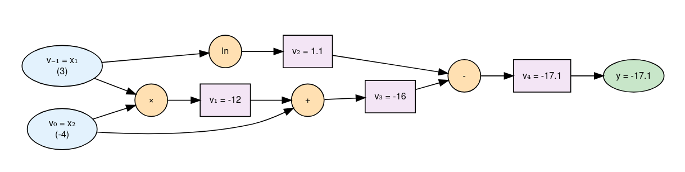
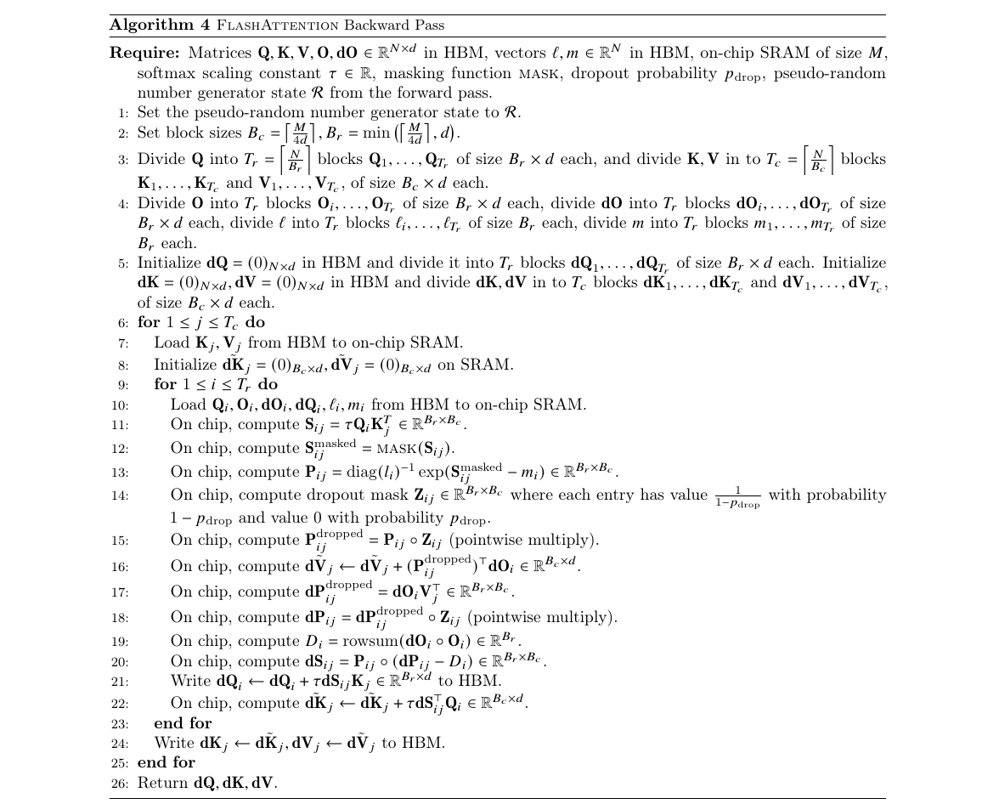
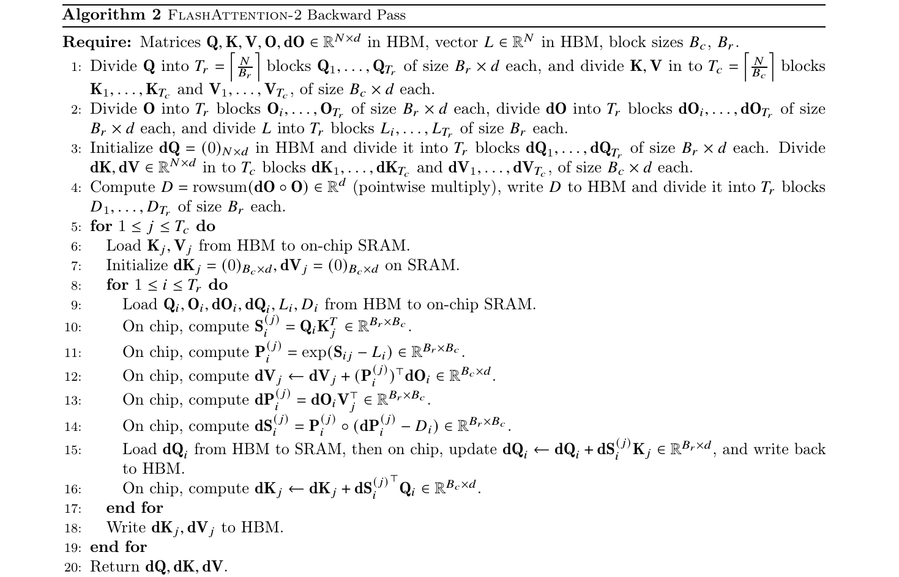

附录9 FlashAttention反向算法推导
FlashAttention反向传播算法推导¶
学习目标¶
- 理解梯度和雅可比矩阵
- 掌握FlashAttention反向算法
1. 反向模式自动微分¶
1.1 梯度下降算法¶
1.1.1 优化问题¶
不管我们使用多么复杂的深度学习算法，在模型训练时的核心就是梯度下降算法(及其各种变体)。从数学的角度，(深度学习)模型就是一个函数：
y = f(\mathbf{x}; \boldsymbol{\theta})
其中 \mathbf{x} 为输入数据，\boldsymbol{\theta} 表示模型中所有可学习的参数。深度学习的核心目标，就是寻找一组最优的参数 \boldsymbol{\theta}^*，使得模型在给定任务上的预测尽可能精准。
为衡量模型预测值与真实标签 \mathbf{y} 之间的差距，我们定义一个 损失函数（Loss Function） \mathcal{L}(\boldsymbol{\theta})。训练过程本质上是一个求解全局极小值的无约束优化问题：
1.1.2 梯度的数学直觉¶
由于深度神经网络的参数量极其庞大且存在高度非线性，我们无法像求解线性方程那样直接推导出解析解（即令 \nabla_{\boldsymbol{\theta}} \mathcal{L} = 0 求闭式解）。因此，我们只能从某个随机初始化的参数 \boldsymbol{\theta}^{(0)} 出发，依靠梯度（Gradient）提供的局部几何信息进行迭代搜索。
根据多元微积分的定义，损失函数 \mathcal{L}(\boldsymbol{\theta}) 对参数 \boldsymbol{\theta} 的梯度是一个由偏导数构成的向量：
- 方向含义：在参数空间中的当前点，梯度向量 \nabla_{\boldsymbol{\theta}} \mathcal{L} 指向损失函数增长最快（上升最陡峭）的方向。
- 负梯度方向：其反方向 -\nabla_{\boldsymbol{\theta}} \mathcal{L} 则指向损失函数下降最快（下降最陡峭）的方向。
1.1.3. 参数更新法则¶
利用负梯度的这一性质，梯度下降算法在每一次迭代中，沿着负梯度方向对参数施加微小的步进调整：
- \boldsymbol{\theta}^{(t)}：第 t 次迭代时的参数状态。
- \eta > 0：学习率（Learning Rate），决定每一步沿负梯度方向移动的步长（Hyperparameter）。
- 步长过大：容易导致训练发散或在极小值附近震荡（Overshooting）。
- 步长过小：收敛速度极慢，且容易卡在鞍点或局部极小值。
1.1.4. 算法执行流程¶
整个梯度下降迭代过程可以概括为以下 4 个连续步骤：
- 前向传播与损失计算：将样本数据喂入模型得到预测值，通过损失函数计算标量误差值 \mathcal{L}。
- 反向求导（计算梯度）：计算损失 \mathcal{L} 对模型中每个参数的偏导数 \nabla_{\boldsymbol{\theta}} \mathcal{L}（在现代框架中通过自动微分实现）。
- 参数更新：依据更新法则 \boldsymbol{\theta} \leftarrow \boldsymbol{\theta} - \eta \nabla_{\boldsymbol{\theta}} \mathcal{L} 对参数进行微调。
- 清空梯度与迭代：清空本次计算的梯度缓存，重复上述步骤，直到损失函数收敛（或达到预设的最大迭代轮数）。
1.1.5 常见变体简介¶
根据每次计算梯度时使用的数据量大小，梯度下降在工程实践中分为三类：
- 批量梯度下降（Batch Gradient Descent, BGD）：使用全部训练样本计算梯度。估计精准，但计算开销巨大，无法处理大数据集。
- 随机梯度下降（Stochastic Gradient Descent, SGD）：每次仅随机抽取 1 个样本计算梯度。计算极快，但梯度估计方差大，训练曲线剧烈震荡。
- 小批量梯度下降（Mini-batch Gradient Descent）：每次抽取一小批样本（Mini-batch，如 32, 64, 512）计算梯度。结合了前两者的优点，充分利用 GPU 矩阵并行能力，是现代深度学习的标准配置。
1.2 导数、梯度和雅可比矩阵¶
我们在深度学习里可能会遇到导数、梯度和雅可比矩阵这些概念。它们其实是密切相关的，都是广义的导数。数学中“导数”的的本质永远是“寻找输入微小变化时，输出变化的最佳线性近似（Local Linear Approximation）”。
这些概念的区别只是输入和输出的 几何维度（阶数/Order）。随着空间的扩展，“导数”的形式经历了从 标量 \to 向量 \to 矩阵 \to 高阶张量 的自然演进。
1.2.1. 导数（Derivative）：标量到标量的变化率¶
- 空间映射：f: \mathbb{R} \to \mathbb{R}
- 几何表达：标量（0 阶张量）
当输入 x 和输出 y 都是一维实数时，导数 f'(x) 描述的是 切线的斜率。
1.2.1.1 核心公式¶
1.2.1.2 一阶线性近似¶
这里的“求导”结果是一个简单的 标量，代表输出相对于输入的增益比例。
1.2.2. 梯度（Gradient）：多维输入，单维输出的最速上升方向¶
- 空间映射：f: \mathbb{R}^n \to \mathbb{R}
- 几何表达：向量（1 阶张量），维度为 (n,)
当输入扩展为 n 维向量 \mathbf{x} = [x_1, x_2, \dots, x_n]^T（例如多元函数或神经网络中的损失函数 Loss），输出仍为一个标量 y 时，我们需要知道 每个输入维度单独变化时对输出的影响。
1.2.2.1 核心公式¶
将所有偏导数组合成一个向量，即为梯度 \nabla f(\mathbf{x})：
1.2.2.2 物理与几何意义¶
- 一阶线性近似：\Delta y \approx \langle \nabla f(\mathbf{x}), \Delta \mathbf{x} \rangle = \nabla f(\mathbf{x})^T \Delta \mathbf{x} （通过 内积 完成映射）。
- 几何直观：梯度向量指向函数值 增长最快 的方向，其模长代表最大增长率。在机器学习中，梯度下降法（Gradient Descent） 正是沿着梯度的反方向（-\nabla f）寻找损失函数的极小值。
1.2.3. 雅可比矩阵（Jacobian Matrix）：向量到向量的局部线性变换¶
- 空间映射：\mathbf{f}: \mathbb{R}^n \to \mathbb{R}^m
- 几何表达：矩阵（2 阶张量），维度为 (m, n)
当输入是 n 维向量，输出也是 m 维向量 \mathbf{y} = [y_1, y_2, \dots, y_m]^T（例如多输入多输出系统，或神经网络的中间隐藏层）时，单一的梯度向量不再适用，必须使用 雅可比矩阵 \mathbf{J}。
1.2.3.1 核心公式¶
雅可比矩阵的每一行对应 一个输出关于所有输入的梯度，每一列对应 所有输出关于同一个输入的偏导数：
1.2.3.2 几何意义与应用¶
- 一阶线性近似：\Delta \mathbf{y} \approx \mathbf{J} \cdot \Delta \mathbf{x} （通过 矩阵与向量乘法 完成线性映射）。
- 自动微分与 VJP：在深度学习反向传播中，我们不需要显式算出这个 m \times n 的大矩阵，而是利用 向量-雅可比积（VJP）：上游传来的梯度向量与雅可比矩阵做左乘，直接将梯度高效反向传递。
1.2.4. 高阶张量雅可比（Jacobian Tensor）：高维空间到高维空间的微积分¶
- 空间映射：\mathcal{F}: \mathbb{R}^{d_1 \times d_2 \times \dots \times d_k} \to \mathbb{R}^{s_1 \times s_2 \times \dots \times s_p}
- 几何表达：高阶张量（(p + k) 阶张量），维度为 (s_1, \dots, s_p, d_1, \dots, d_k)
在现代深度学习中，输入和输出往往不是平坦的 1D 向量，而是 高维张量。例如：
- 输入 \mathbf{X} 是图像特征图，维度为 (C_{in}, H, W)（3 阶张量）。
- 输出 \mathbf{Y} 是卷积后的特征图，维度为 (C_{out}, H', W')（3 阶张量）。
当一个 p 阶张量关于一个 k 阶张量求导时，其导数结构被称为 高阶雅可比（Jacobian Tensor / Higher-Order Jacobian）。
1.2.4.1 核心公式与索引表示¶
雅可比张量 \mathcal{J} 的每一个元素，代表 输出张量的某个具体位置，对输入张量的某个具体位置的偏导数：
- 示例（矩阵到矩阵映射）： 设输入 \mathbf{A} \in \mathbb{R}^{m \times k}，输出 \mathbf{C} = \mathbf{A}\mathbf{B} \in \mathbb{R}^{m \times n}。 \mathbf{C} 关于 \mathbf{A} 的雅可比是一个 4 阶张量 \mathcal{J} \in \mathbb{R}^{m \times n \times m \times k}。
1.2.4.2 线性近似与张量缩约（Tensor Contraction）¶
- 一阶线性近似：\Delta \mathbf{Y} \approx \mathcal{J} \otimes \Delta \mathbf{X}
- 深度学习框架中的解法：如果显式分配内存去存这个 4 阶张量，内存会瞬间爆掉。PyTorch/JAX 等框架通过 解析推导，将这种高阶张量缩约转换为普通的低维矩阵乘法（如 \frac{\partial L}{\partial \mathbf{A}} = \frac{\partial L}{\partial \mathbf{C}} \mathbf{B}^T），在底层消除了高阶张量的显式存储。
1.2.4.5. 演进脉络全景总结¶
从一维到高维，导数的演化遵循极其对称和统一的几何规律：
| 概念 | 输入维度 (Input) | 输出维度 (Output) | 导数表达形式 | 阶数 (Order) | 线性近似运算 |
|---|---|---|---|---|---|
| 导数 (Derivative) | 标量 (1) | 标量 (1) | 标量 f'(x) | 0 阶 | 标量乘法 (\cdot) |
| 梯度 (Gradient) | 向量 (n) | 标量 (1) | 向量 \nabla f(\mathbf{x}) | 1 阶 | 向量点积 (\langle \cdot, \cdot \rangle) |
| 雅可比矩阵 (Jacobian Matrix) | 向量 (n) | 向量 (m) | 矩阵 \mathbf{J} | 2 阶 | 矩阵乘法 (\mathbf{J} \Delta \mathbf{x}) |
| 高阶张量雅可比 (Jacobian Tensor) | k 阶张量 | p 阶张量 | 高阶张量 \mathcal{J} | (p+k) 阶 | 张量缩约 (\mathcal{J} \otimes \Delta \mathbf{X}) |
一句话总结： 从导数到高阶张量雅可比，本质上就是 把“输出的每一个分量”对“输入的每一个分量”求偏导，并将所有结果按照各自的几何维度排列组合起来。输出加 p 阶，输入加 k 阶，导数张量的阶数就是 p + k 阶。
1.2.5 雅可比矩阵和高阶张量雅可比¶
1.2.5.1. 雅可比矩阵 (Jacobian Matrix) 必须是矩阵吗？¶
在严格的日常数学和工程语境中，“Jacobian”通常默认指“雅可比矩阵”（Jacobian Matrix）。
但从广义的几何与张量分析视角来看，它 不一定局限于二维矩阵：
- 经典定义（一阶导数矩阵）： 当映射是 \mathbf{f}: \mathbb{R}^n \to \mathbb{R}^m（向量到向量）时，其一阶偏导数构成的结构就是一个真正的 m \times n 二维 矩阵。
- 高维推广（雅可比张量 / Jacobian Tensor）：
当映射的输入或输出本身就是高维张量（例如深度学习中图像特征图 \mathbb{R}^{C \times H \times W} 映射到另一个张量）时，所有一阶偏导数组合成的整体就不再是二维矩阵，而是一个 高阶张量。
- 习惯称呼：即使此时它的阶数（Order/Rank）大于 2，许多文献和工程口头表达中依然会通称其为 “Jacobian” 或 “Generalized Jacobian”（广义雅可比）。
1.2.5.2. 高阶张量雅可比的英文怎么说？¶
在英文学术界、官方文档（如 PyTorch / JAX 源码）和技术论文中，针对高维/高阶的雅可比，有以下几种标准英文表述：
① Jacobian Tensor （最标准、最准确的术语）¶
- 释义：雅可比张量。当雅可比的阶数大于 2 时，直接将 Matrix 替换为 Tensor。
- 例句：The Jacobian tensor of a function mapping from a 2D matrix to a 2D matrix has order 4.
② Higher-Order Jacobian / High-Dimensional Jacobian¶
- 释义：高阶雅可比 / 高维雅可比。强调输入/输出空间的维度或者张量本身的阶数较高。
- 应用场景：学术论文中用于描述复杂张量函数的微分。
③ Generalized Jacobian¶
- 释义：广义雅可比。
- 应用场景：常用于将“向量对向量”的传统雅可比矩阵推广到“任意阶张量对任意阶张量”的场景，或者在非光滑分析中使用。
④ Jacobian （不加后缀，作为抽象代数概念）¶
- 说明：在 JAX、PyTorch 等框架的官方文档中，如
jax.jacobian或torch.autograd.functional.jacobian，函数名统称为 Jacobian。无论输入输出是 1D 向量还是 4D 特征图，它返回的统一都被称为 "the Jacobian"（其返回对象的shape是输出形状与输入形状的拼接）。
1.3 用计算机求导¶
上面的梯度下降算法的核心是计算损失函数对所有参数的梯度。求梯度就是求(偏)导数，那么下面我们从数学角度来看看怎么用计算机求导数。
1.3.1 两种范式¶
在数学与计算机科学中，求导在任务目标和实现路径上可以清晰地划分为两种基本范式：
1.3.2.1. 求导数函数的解析形式（Symbolic / Global Derivative）¶
- 目标：给定一个以符号形式表示的函数 f(x)，推导出其导函数 f'(x) 的 闭式解析表达式（Closed-form Expression）。
- 特点：
- 全局性：得到的是一个全新的函数表达式 f'(x)。一旦求出，可以代入定义域内的 任意 特定点 x_0 快速评估其导数值。
- 手段：主要依赖计算机代数系统（CAS，如 Mathematica、SymPy）通过代数化简和求导法则进行 符号求导（Symbolic Differentiation）。
- 局限：对于深度学习中由数百万个嵌套算子组成的复杂计算图，直接推导全局解析表达式会导致严重的 表达式膨胀（Expression Swelling），且无法直接处理包含
if-else或while循环的算法逻辑。
1.3.2.2. 求某个函数在特定点的导数值（Point-wise / Local Derivative）¶
- 目标：给定函数 f(x) 和一个确定的数值输入 x_0，直接计算出该点处的 局部变化率（即具体数值） f'(x_0) \in \mathbb{R}。
- 特点：
- 局部性：只关心在 x = x_0 这一特定的参数状态下，函数的几何斜率（或梯度向量），不需要也不生成通用的导函数表达式。
- 手段：
- 数值微分（Finite Difference）：通过在 x_0 附近进行微小扰动 f(x_0 + h) - f(x_0) 来近似估计斜率。
- 自动微分（Automatic Differentiation）：在计算图前向传播算出 f(x_0) 的同时，将中间数值与预设的局部求导规则代入链式法则，直接输出 x_0 处的精确梯度。
- 与深度学习的契合度：深度学习的梯度下降算法（Gradient Descent）只需要特定点（当前参数状态 \boldsymbol{\theta}^{(t)}）处的梯度数值 来决定参数更新的方向与步长。因此，现代深度学习框架（如 PyTorch、JAX）完全专注于这种“求特定点导数”的计算范式。
1.3.2.3 题外话：闭式表达式的计算不一定更快¶
“闭式解析表达式（Closed-form Expression）”在数学上意味着 形式上的优雅与优雅的全局性质，但 不等于在计算机上的高效与精准。
1. 经典案例：斐波那契数列的比奈公式¶
斐波那契数列的递推定义（非闭式/迭代）：
通过特征方程求解，可以得到它的 闭式解析表达式（比奈公式）：
虽然这是一个纯粹的代数闭式解，但如果直接用计算机去评估这个公式，会遭遇 计算速度与精确度的双重溃败：
1. 精度溃败：浮点数舍入误差（Floating-point Errors）
- 斐波那契数 F_n 是 严格的精确整数。
- 但比奈公式中引入了无理数 \sqrt{5} \approx 2.236067977...。计算机在存储 \sqrt{5} 和黄金分割比时，必须进行浮点截断（如 IEEE 754 标准）。
- 当 n 稍大时（例如 n > 70），浮点数的累积误差与幂次放大，会导致算出来的结果出现 小数尾数甚至整数部分的错位，失去数学上的精确性。而简单的整数加法递推则可以结合大整数运算做到 100% 精确。
2. 速度溃败：浮点幂运算 vs 矩阵快速幂/加法
- 直接评估闭式公式：需要调用 CPU 的浮点数乘方指令（如
pow()或exp(n * log(...))），这些超越函数和浮点浮点乘法在硬件底层的微指令周期（Clock Cycles）远高于基本的整数加法。 - 非闭式计算（矩阵快速幂）：利用递推关系的矩阵形式：
结合 分治快速幂算法（Binary Exponentiation），只需要 O(\log n) 次 纯整数乘法与加法，其运行速度和硬件流水线利用率远超浮点闭式公式。
2. 为什么闭式解析解不一定比非闭式/数值算法快？¶
从计算机底层和数值分析的角度看，闭式解往往存在以下几个导致性能变差的“硬伤”：
| 维度 | 闭式解析解 (Closed-form) | 非闭式 / 迭代 / 数值算法 (Iterative/Numeric) |
|---|---|---|
| 硬件原生支持 | 常包含开方（\sqrt{x}）、三角函数（\sin, \cos）、对数/指数（\ln, e^x）等超越函数。ALU 需要数十个周期。 | 主要由加减法、乘法和位移构成。ALU 仅需 1~3 个周期，且极易被 SIMD 向量化。 |
| 算法复杂度 | 虽然公式看起来是一行，但计算该公式内部项的复杂度可能很高（如 O(n^3) 的矩阵求逆）。 | 许多迭代算法（如牛顿迭代法、梯度下降）可以通过极少的迭代步数快速收敛到所需精度。 |
| 数值稳定性 | 极易引发 灾难性相消（Catastrophic Cancellation） 或大数吃小数（如两个相近的极大浮点数相减）。 | 现代数值算法（如 QR 分解、在线 Softmax）专门针对浮点数稳定性进行了抗溢出设计。 |
3 深度学习中的类比：符号求导 vs 自动微分¶
这个现象在深度学习中展现得更加淋漓尽致：
- 闭式求导（符号微分）：如果你试图推导出包含 100 层 Transformer 的 Loss 对第一个权重 w_1 的 闭式解析导数公式，展开后的表达式长度会达到数 GB 级别（表达式爆炸）。在计算机上评估这个庞大的闭式公式，计算量是不可接受的。
- 非闭式求导（自动微分/反向传播）：不显式展开全局闭式解，而是按计算图分步迭代，把前向传播产生的中间数值直接代入局部链式法则。这种“非闭式”的动态数值计算，比运行庞大的闭式公式快了成千上万倍，且显存开销极大降低。
4. 总结¶
“闭式”是 数学形式主义 上的追求（便于证明理论性质），而“计算效率”是 计算机体系结构与数值分析 的工程实操。用数值迭代/递推去逼近或替代复杂的闭式解，不仅不劣势，反而恰恰是现代科学计算与深度学习能够高效运转的基石。
1.4 数值微分¶
1.4.1 计算方法¶
数值微分（Numeric Differentiation）是我们利用导数的极限定义来计算梯度、进而优化神经网络的一种方法。
为了计算单变量函数 f: \mathbb{R} \to \mathbb{R} 在输入 x 处的导数，我们需要求出该点切线的斜率。切线斜率可以拆解为函数在 x 处的纵向增量（Rise）与横向增量（Run）的比值。
在计算纵向增量时，我们在两个输入点评估函数：一个是原始输入 x，另一个是推动了一个微小常数 h 后的输入——这反映在公式 (1) 的分子中。接下来，我们除以横向增量；由于我们把输入推动了 h，因此横向增量就是 h。通过取极限，当 h 趋近于零时，f(x) 在 x 处的导数近似值会变得越来越精确。
在实践中，神经网络将算术运算应用于多维数组（通常被称为张量 Tensor）。在程序中显式地求极限是没有意义的，因此我们舍弃极限符号，将表达式重写为作用于网络参数的形式：
上式 是 前向差分法（Forward Difference Method），用于计算多变量函数 f: \mathbb{R}^n \to \mathbb{R} 对参数向量 \mathbf{\theta} 中单个参数 \theta_i 的偏导数。符号 \mathbf{e}_i 表示单位向量（其中第 i 个元素为 1，所有其他元素均为 0）。
现在，只需在 h \approx 0 的条件下评估公式 ，就能轻松计算出 \mathbf{\theta} 中第 i 个参数的偏导数。在神经网络的语境下，f 代表目标损失函数，而 \mathbf{\theta} 代表模型的参数化表示。通过对模型的所有参数评估公式 (2)，我们就能获得梯度下降单步更新所需的全部梯度。
在公式的末尾有一个大 O 符号项。这个符号是一个关于 h 的函数，用于表示 截断误差（Truncation Error）。截断误差被定义为由于截断 \frac{\partial f}{\partial \mathbf{\theta}_i} 的泰勒级数展开式中的部分项而造成的误差。具体来说，因为我们使用 h 对 \theta_i 的偏导数进行近似，所以会产生依赖于 h 的近似偏差。此外，截断误差与 h 成正比，这意味着无论 h 按什么比例缩放，截断误差都会按相同的比例缩放。
现在，有一些方法可以最小化这种误差。首先，我们可以将近似方法改为如下所示的 中心差分法（Central Difference Method）：
中心差分是公式 (2) 中的前向差分与后向差分的结合。通过用前向差分减去后向差分并进行简化，O(h) 中的一阶误差项会被抵消，从而使二阶误差项成为主导。此时误差与 h 的平方成正比，这意味着如果 h 减小一个数量级，误差将减小两个数量级。
作为稳定该方法的另一种途径，我们可以直接减小 h，因为当 h \approx 0 时，截断误差几乎不复存在。从理论上讲，这应该能消除数值微分所面临的误差。然而，这样做会产生副作用，从而将我们带入下一节。
1.4.2 数值微分的问题¶
在理解了数值微分之后，我们可以进一步探讨为什么在神经网络优化的实现中会避开它。针对通过减小 h 来缓解截断误差的方案，我们同时引入了另一种被称为舍入误差（Round-off Error）的误差。
舍入误差是由计算机表示数值时的不精准性所引发的误差。诸如 IEEE 754 等标准普及了在程序中使用单精度浮点数（float32）来表示实数。神经网络依赖于这些表示，但它们是有限制的。浮点数被分配了固定的空间（大多数情况下为 32 位），这阻止了对任意大或任意小的数值实现更高层次的精度。将这一点与数值微分联系起来：如果数值变得太小，它们就会 下溢（Underflow）成零，并在过程中丢失数值信息。
这一点至关重要，因为当我们试图减小 h 以减轻截断误差时，我们却增加了舍入误差。事实上，舍入误差与 h 的缩放成反比。例如，如果我们将 h 减半，舍入误差就会翻倍。截断误差与舍入误差之间的这种平衡引入了一种权衡（Trade-off），即在选择合适的 h 以计算精准梯度时必须予以考虑。
有人可能会提出使用更高精度的数据类型（例如 float64）的建议，但这会由于更高的内存需求和额外的计算量而增加硬件限制——这完全是一个不必要的权衡。
转向另一个维度，另一个问题来自于数值微分的 运行时间复杂度（Runtime Complexity）。
为了实际计算梯度，我们必须评估目标函数。在求解一个具有 n 个输入和标量输出的函数的梯度时，我们需要 O(n) 次操作。这甚至还没考虑到神经网络中常见的向量值函数。例如，如果我们有一个函数 f: \mathbb{R}^n \to \mathbb{R}^m，我们将大约需要 O(mn) 次操作来计算梯度，这使得对于较大的 m 和 n 值，总体计算效率非常低下。
在梯度下降是一个应用于数百万甚至数十亿参数的迭代过程这一背景下，我们可以看到数值微分对于神经网络优化来说 扩展性不够好。在了解了它的不足之处后，我们可以将目光转向另一种替代方法：符号微分（Symbolic Differentiation）。
1.5 符号微分¶
1.5.1 计算方法¶
符号微分(Symbolic Differentiation)它是一个系统化的过程，通过将微积分的求导法则（例如求和法则）应用于闭式表达式（closed-form expressions），将由算术运算和符号构成的表达式转换为表示其导数的表达式。
实际上，符号微分就是计算机模仿人类用手算推导函数导数的方式。例如，对于下面的两个函数 f 和 g，我们可以利用微积分推导出其复合函数的导数表达式：
要求解输入为 f(g(x)) 时的导数值，我们只需将输入代入上述转换后的表达式中进行计算即可。在实际应用中，我们会通过编程来实现这一过程，并且涉及的变量不仅仅是标量（例如可以是向量、矩阵或张量）。
下面是一个使用 Python 中的 sympy 库对公式 (4) 进行符号微分得到公式 (5) 的示例：
from sympy import diff, exp, cos, symbols
x = symbols("x")
fog = 4 * (cos(x) + 2 * x - exp(x)) ** 2
dfdx = diff(fog, x)
print(dfdx)
# 输出: 4*(2*x - exp(x) + cos(x))*(-2*exp(x) - 2*sin(x) + 4)
注：代码输出的导数表达式看起来可能与公式 (5) 略有不同，但它们本质上是等价的。只是项的顺序做了微调，且将来自 \frac{df}{dg} 的系数 2 分配到了 \frac{dg}{dx} 中。
这种方法解决了数值微分中出现的数值不精确和不稳定的问题，因为我们拥有一个可以直接计算函数梯度的精确表达式。然而，在优化神经网络时，我们仍然面临一些限制其可行性的问题，这些问题将在下一节中阐明。
1.5.2 符号微分的缺陷¶
1.5.2.1 表达式膨胀¶
我们可以看到，符号微分面临的 首要问题是表达式膨胀（Expression Swell）。表达式膨胀会导致导数表达式在系统化应用求导法则的过程中，因不断的代数转换而呈现指数级增长。
以如下的乘法法则（积的求导公式）为例：
导数表达式不仅在项数上有所增加，计算量也随之膨胀。这甚至还没考虑到 f 或 g 本身可能就是复杂的函数——这可能会引发更严重的表达式膨胀。
我们在推导 \frac{df}{dx} 时就已经感受到了轻微的表达式膨胀，而那还只是一个相对简单的函数。现在想象一下，对许多不断重复应用求导法则的复杂复合函数做同样的操作。考虑到神经网络代表了极其复杂的复合函数，采用这种方式是非常不切实际的。
表达式膨胀示例
表达式膨胀：上式展示了神经网络中常见的线性投影后接非线性激活函数 \text{tanh} 的情形。可以看到，在不进行化简和优化的情况下，仅为了求解更新权重 w 所需的梯度，就会导致惊人数量的表达式膨胀和重复计算。
1.5.2.2 函数必须是闭式形式¶
另一个缺陷在于，符号微分仅局限于闭式表达式（Closed-form Expressions）。
编程的强大之处在于能够利用控制流（Control Flow）根据程序的当前状态改变其行为，这一机制也常用于神经网络中。如果我们想在传入特定输入时改变某种运算的施加方式，或者希望模型根据不同的模式表现出不同的行为，该怎么办？
这种逻辑在符号上是不可微的，结果就是我们会失去实现各种动态模型架构所需的灵活性。
无法支持控制流示例
from sympy import diff, symbols
def f(x):
if x > 2:
return x * 2 + 5
return x / 2 + 5
x = symbols("x")
dfdx = diff(f(x))
print(dfdx)
# 报错: TypeError: cannot determine truth value of Relational
1.5.2.3 重复计算¶
最后一个缺陷（在表达式膨胀的例子中已有所展示）是会引发重复计算。
在公式 (4) 和 (5) 的例子中，我们计算了三次 e^x：在计算公式 (4) 时计算了一次，在计算公式 (5) 时计算了两次。对于更复杂的函数，这种重复计算会在更大的规模上发生，从而进一步降低符号微分的实用性。
虽然我们可以通过 缓存结果 来缓解这个问题，但这并不能从根本上解决表达式膨胀的问题。
1.5.3 总结¶
总体而言，正是 表达式膨胀、要求表达式必须为闭式形式 以及 重复计算 这三大缺陷，限制了符号微分在神经网络优化中的应用。
然而，应用求导法则的直觉 与 缓存机制（作为重复计算的解决方案），共同构成了 自动微分（Automatic Differentiation） 的基石。
1.6 自动微分¶
自动微分（Automatic Differentiation，简称 AD）是现代深度学习框架的基石。在经历了数值微分的 不精准/效率低下 与符号微分的 表达式膨胀/无法处理动态控制流 后，自动微分提供了一种完美的折中与超越。
1.6.1. 自动微分的定义¶
自动微分 是一种利用计算机程序精确且高效计算 复合函数 导数（梯度）的数值计算方法。
它将任何复杂的计算过程（例如神经网络）拆解为一系列由 基本算子（加、减、乘、除、指数、对数、三角函数等）构成的顺序序列，并在后台隐式地构建一张 有向无环图（Directed Acyclic Graph, DAG），即 计算图（Computation Graph）。
- 核心本质：自动微分 既不是求解析符号表达式，也不是做有限差分逼近。它是在计算图的前向传播过程中将具体的数值代入，并在反向（或前向）遍历图节点时，利用预设的局部求导规则与链式法则，直接计算出特定点处的精确梯度数值。
- 特性：
- 高精度：达到机器浮点数的极限精度（无截断误差）。
- 高效率：通过反向遍历，计算整个参数集梯度的开销仅为前向传播的 2~3 倍，复杂度与参数量 n 无关。
- 动态支持：完全支持 Python 原生的控制流（
if-else、while循环、递归等）。
自动微分将复合函数分解为构成它们的变量和 初等运算。所有的数值计算都围绕这些运算展开，由于我们已知这些初等运算的导数，因此可以通过链式法则将它们连接起来，进而求出整个函数的导数。简而言之，自动微分是数值计算的增强版本，它不仅能计算数学函数的值，还可以在计算过程中同步求出函数的导数。
初等运算是指最基础的数学运算：具有明确导数定义的加、减、乘、除。超越函数（如自然对数 \ln 和余弦函数 \cos）在严格的数学定义上不属于初等运算，但在自动微分的语境下，由于它们的导数也是明确已知的，通常也将它们归为初等运算。
1.6.2. 从“链式法则”角度深度解读自动微分¶
微积分的 链式法则（Chain Rule） 是自动微分的灵魂。如果把整个计算图比作一条由无数算子交织构成的“链条”，自动微分本质上就是 对链式法则在计算机图结构上的工程化高效实现。
假设一个由多个基本算子复合而成的简单函数序列：
根据链式法则，输出 y 对输入 x 的导数可以展开为各个局部算子导数的连乘积：
链式法则给出了导数的乘法结合律。而对这串连乘积“计算顺序”的不同选择，就演化出了自动微分的两大模式：
1.6.2.1 前向模式（Forward-mode AD / JVP）—— 从右往左结合¶
在前向模式中，链式法则按照从输入到输出的正向顺序相乘：
- 工程过程：在计算前向数值 v_i 的同时，捎带计算出当前节点对输入的切线（Tangent） \dot{v}_i = \frac{dv_i}{dx}。
- 局限：如果输入 x 是一个 n 维向量 \mathbf{x} \in \mathbb{R}^n，每次前向传播只能计算出 一个输入分量 对所有输出的偏导数。求全梯度需要运行 n 次前向传播。
1.6.2.2 反向模式（Reverse-mode AD / VJP）—— 从左往右结合¶
深度学习所使用的反向传播（Backpropagation）正是 反向模式自动微分。它按照从输出（Loss）到输入（参数）的逆向顺序结合链式法则：
- 第一阶段（前向传播）：求出所有的中间状态数值 v_1, v_2, \dots, v_{m-1}，并保存在内存中（Save for Backward）。
- 第二阶段（反向传播）：从标量 Loss（y）出发，令初始梯度 \bar{y} = \frac{\partial y}{\partial y} = 1.0，沿着计算图逆向回溯。每一个节点接收上一级传递来的累积梯度，乘以本节点的局部导数（闭式代入），得到下一级的梯度信号 \bar{v}_i = \frac{\partial y}{\partial v_i}。
1.6.2.3. 为什么链式法则与自动微分的结合对深度学习至关重要？¶
- 解耦局部与全局：
框架（如 PyTorch）的底层作者只需要为每一个基本算子（如
MatMul、ReLU）编写其局部 VJP（Vector-Jacobian Product）计算规则（即利用符号导数手写好的闭式函数）。而用户随意搭建的复杂网络，框架只需要利用链式法则，把这些局部的 VJP 动态相乘累加，就能自动求出极其庞大网络的全局梯度。 - 复杂度突破： 通过将链式法则右结合（反向模式），对于任意参数维度 n（即便 n = 1000 亿），计算 Loss 对所有 n 个参数梯度的复杂度依然保持为 O(1) 次反向传播。这就是链式法则赋予深度学习的终极威力。
1.6.3 自动微分计算图¶
为了实现自动微分，我们可以利用 计算轨迹 (Evaluation Trace)。计算轨迹是一种特殊的表格，用于记录中间变量以及生成这些变量的对应运算。表格中的每一行都对应一个中间变量以及导致该变量产生的初等运算。这些变量被称为 原初变量 (Primals)，对于映射为 f: \mathbb{R}^n \to \mathbb{R}^m 的函数，通常用 v_i 表示，并遵循以下规则：
- 输入变量：v_{i-n} = x_i, \quad i = 1, \dots, n
- 中间变量：v_i, \quad i = 1, \dots, l
- 输出变量：y_{m-i} = v_{l-i}, \quad i = m-1, \dots, 0
下面展示了一个针对接受两个输入 x_1 和 x_2 的函数，其计算轨迹中 前向原初计算 (Forward Primal Computation) 的示例：

| 轨迹计算步骤 | 计算过程与输出结果 |
|---|---|
| v_{-1} = x_1 | 3 |
| v_0 = x_2 | -4 |
| v_1 = v_{-1} v_0 | 3 \times (-4) = -12 |
| v_2 = \ln(v_{-1}) | \ln(3) \approx 1.1 |
| v_3 = v_1 + v_0 | -12 + (-4) = -16 |
| v_4 = v_3 - v_2 | -16 - 1.1 = -17.1 |
| y = v_4 | -17.1 |
除了计算轨迹之外，我们还可以使用 有向无环图 (Directed Acyclic Graph, DAG) 作为数据结构，在算法层面表示该计算轨迹。DAG 中的节点代表输入变量、中间变量和输出变量，而边则描述了从输入到输出转换的计算层级关系。最后，该图必须是有向且无环的，以确保计算流向的正确性。整体而言，这种类型的 DAG 通常被称为 计算图 (Computational Graph)。
1.6.4 前向模式自动微分¶
1.6.4.1 计算过程¶
前向模式自动微分（Forward mode AD）沿用了我们先前在计算轨迹（evaluation trace）中所涵盖的原理，但引入了与原像（primal）v_i 相对应的 切量（tangent），记作 \dot{v_i}。这些切量携带着原像相对于我们感兴趣的某个特定输入变量的偏导数信息。
参考之前的公式 (6)，如果我们想要求解 \frac{\partial{y}}{\partial{x_2}}，切量的定义如下：
基于该定义，我们可以构建前向原像轨迹与前向切量轨迹，用于计算当 x_1 = 3、x_2 = -4、\dot{x}_1 = \frac{\partial x_1}{\partial x_2} = 0 且 \dot{x}_2 = \frac{\partial x_2}{\partial x_2} = 1 时的 \frac{\partial y}{\partial x_2}：
| 前向原像轨迹 (Forward Primal Trace) | 输出 | 前向切量轨迹 (Forward Tangent Trace) | 输出 |
|---|---|---|---|
| v_{-1} = x_1 | 3 | \dot{v}_{-1} = \dot{x}_1 | 0 |
| v_0 = x_2 | -4 | \dot{v}_0 = \dot{x}_2 | 1 |
| v_1 = v_{-1} v_0 | 3 \cdot -4 = -12 | \dot{v}_1 = \dot{v}_{-1} v_0 + \dot{v}_0 v_{-1} | 0 \cdot -4 + 1 \cdot 3 = 3 |
| v_2 = \ln(v_{-1}) | \ln(3) = 1.10 | \dot{v}_2 = \dot{v}_{-1} \cdot (1 / v_{-1}) | 0 \cdot (1 / 3) = 0 |
| v_3 = v_1 + v_0 | -12 + -4 = -16 | \dot{v}_3 = \dot{v}_1 + \dot{v}_0 | 3 + 1 = 4 |
| v_4 = v_3 - v_2 | -16 - 1.10 = -17.10 | \dot{v}_4 = \dot{v}_3 - \dot{v}_2 | 4 - 0 = 4 |
| y = v_4 | -17.10 | \dot{y} = \dot{v}_4 | 4 |
这个过程就是前向模式 AD 的核心精髓：对于给定的函数，在其每一个基本算子处，通过应用基础算术运算计算中间变量（原像）；与此同时，利用微积分已知规则同步计算它们的导数（切量）。
1.6.4.2. 雅可比-向量积¶
借助这种方法，我们能做的不止是计算标量导数，还可以计算雅可比矩阵（Jacobian）。对于向量值函数 f: \mathbb{R}^n \to \mathbb{R}^m，我们选择一组输入 \mathbf{a} \in \mathbb{R}^n——其中设 \mathbf{x} = \mathbf{a}，且对于 i=1,\dots,n，切量设为标准基向量 \mathbf{\dot{x}} = \mathbf{e}_i。以该输入在前向模式下运行函数，即可生成所有输出变量 y_j (j=1,\dots,m) 相对于单个输入变量 x_i 的偏导数。本质上，前向模式 AD 中的 每一次前向传播都会生成雅可比矩阵的一列——即所有输出对某一个输入的偏导数。
回顾一下 雅可比矩阵 (Jacobian Matrix) 的定义：
由于函数 f: \mathbb{R}^n \to \mathbb{R}^m 拥有 n 个输入，而前向模式下的单次前向传播仅能生成雅可比矩阵的一列，因此计算完整的 m \times n 雅可比矩阵需要 O(n) 次求值。如果你对线性代数还有印象的话，完整的雅可比矩阵代表了所有输出相对于所有输入的偏导数；在我们当前的语境下，它对应着我们为了优化而试图推导的梯度。
这一特性可以泛化为 雅可比-向量积（Jacobian-vector product, JVP）。JVP 指的是函数的雅可比矩阵 \mathbf{J} \in \mathbb{R}^{m \times n} 与列向量 \mathbf{r} \in \mathbb{R}^n 之间的乘积。乘积的结果是一个 m 维列向量：
雅可比-向量积 (Jacobian-vector Product)
雅可比-向量积编码了输入受到扰动时输出的变化量。更准确地说，它描述了当输入沿着方向 \mathbf{r} 发生微小微调时，输出所产生的变化。
为什么说它描述了当输入沿着方向 \mathbf{r} 发生微小微调时，输出所产生的变化呢？下面解释一下：
1. 从多元函数的全微分
假设函数 \mathbf{y} = f(\mathbf{x})，其中输入 \mathbf{x} \in \mathbb{R}^n，输出 \mathbf{y} \in \mathbb{R}^m。
当输入发生微小扰动 \mathrm{d}\mathbf{x} 时，根据多元函数的一阶泰勒展开，第 j 个输出组件 y_j 的微小变化量 \mathrm{d}y_j 为全微分：
2. 写成矩阵形式（这正是 \mathrm{d}\mathbf{y} = \mathbf{J} \mathrm{d}\mathbf{x}）
将所有 m 个输出分量的微分组合成列向量 \mathrm{d}\mathbf{y} = [\mathrm{d}y_1, \mathrm{d}y_2, \dots, \mathrm{d}y_m]^T：
紧凑表示即为：
3. 对应到 JVP
在 JVP 的语境下：
- 我们给定输入的 微扰方向与大小 为向量 \mathbf{r} \in \mathbb{R}^n（即设定 \mathrm{d}\mathbf{x} = \mathbf{r}，在算法中这就是输入的初始切量 \dot{\mathbf{x}}）。
- 输入沿该方向进行微小扰动：\mathbf{x}(t) = \mathbf{x}_0 + t\mathbf{r}（其中 t 为标量时间/扰动步长）。
- 根据链式法则，输出 \mathbf{y} 关于步长 t 的变化率（方向导数）为：
因此：
- \mathbf{r}（输入切量 \dot{\mathbf{x}}）：输入的微小变化量 \mathrm{d}\mathbf{x}。
- \mathbf{J} \cdot \mathbf{r}（输出切量 \dot{\mathbf{y}}）：输入改变 \mathrm{d}\mathbf{x} 后，引起的 输出微小变化量 \mathrm{d}\mathbf{y}。
1.6.4.3. 高效计算JVP¶
在前向模式 AD 中，这一特性的独到之处在于：我们根本无需显式计算出完整的雅可比矩阵。只需选择一组输入并设定扰动向量 \mathbf{r}，在前向模式下对函数进行单次求值，就能直接输出 JVP，全程无需构建整个雅可比矩阵。
前向模式自动微分（Forward-mode AD）之所以能 避开 显示构造 m \times n 的雅可比矩阵 \mathbf{J}，是因为它将导数计算直接 嵌入（Piggyback）到了前向函数的数值计算流中。
1. 数学层面：列向量的线性组合与方向导数¶
从线性代数的角度来看，雅可比矩阵 \mathbf{J} 与方向向量 \mathbf{r} = [r_1, r_2, \dots, r_n]^T 的乘积，本质上就是 雅可比矩阵各列的线性组合：
- 矩阵 \mathbf{J} 的第 i 列 \mathbf{J}_{:,i} 代表：当仅改变输入 x_i 时，所有输出 \mathbf{y} 的变化率。
- 乘以标量 r_i 代表：将输入 x_i 的这种变化率按扰动强度 r_i 进行缩放。
- 将所有 r_i \mathbf{J}_{:,i} 求和代表：将所有输入变量在方向 \mathbf{r} 上的微小变化对输出产生的影响累加起来（即多元函数沿方向 \mathbf{r} 的方向导数/全微分）。
2. 工程与算法层面：为何不需要显式构造 \mathbf{J} 并求和？¶
如果要“先算 \mathbf{J} 再乘 \mathbf{r}”，你需要分别对基向量 \mathbf{e}_1, \dots, \mathbf{e}_n 运行 n 次前向传播拿到 n 个列向量，组成矩阵后再乘以 \mathbf{r}。
但在前向模式 AD 中，我们直接把扰动向量 \mathbf{r} 作为初始切量（Tangent）输入：
即对于每个输入节点 x_i，设置其初始切量为 \dot{x}_i = r_i。
局部的链式法则自动完成了“按列缩放与求和”
在前向传播过程中，计算图中任何一个中间节点 v_k 的切线值 \dot{v}_k 定义为：该节点关于输入沿着方向 \mathbf{r} 的全变化率。
对于带有多个父节点 \text{Parents}(v_k) 的任意基本算子，前向模式应用链式法则计算切量：
当这个计算随着原像（Primal）的前向评估 同步自底向上推进 到最终的输出节点 y_1, y_2, \dots, y_m 时：
- 隐式包含各列：每个局部偏导数 \frac{\partial v_k}{\partial v_j} 都是基本算子的已知导数（如 \sin \to \cos、\times \to \text{另一个因子}）。
- 初始条件的线性传递：由于初始切量设为了 \dot{x}_i = r_i，根据导数的线性性质，初始的 r_i 会沿着数据流网络被局部偏导数逐级相乘（相当于生成了 r_i \mathbf{J}_{:,i}）。
- 汇合节点的自然累加：每当两条计算路径汇合时，加法算子或多元算子的链式法则求和项 \sum 会自动将来自不同输入 x_i 经过 r_i 缩放后的梯度贡献 实时加在一起。
当遍历完整个计算图到达输出层时，输出节点的切量组合 \begin{bmatrix} \dot{y}_1 \\ \vdots \\ \dot{y}_m \end{bmatrix} 正好就等于 \sum_{i=1}^{n} r_i \mathbf{J}_{:,i}。
3. 直观对比¶
- 传统做法（显式构造 \mathbf{J}）： 做 n 次前向传播得到 n 个列向量 \mathbf{J}_{:,1}, \dots, \mathbf{J}_{:,n}，存储为一个 m \times n 的大矩阵 \mathbf{J}，最后做一次矩阵-向量乘法 \mathbf{J} \cdot \mathbf{r}。
- 时间复杂度：O(n \cdot \text{Cost}(f))
- 空间复杂度：O(m \cdot n)（存储矩阵）
- 前向 AD（直接算 JVP）： 将输入切量设为 \dot{\mathbf{x}} = \mathbf{r}，随函数本身进行 单次前向求值。在计算每个中间算子时，通过双数（Dual Numbers）或伴随切量算法同步算出 \dot{v}_k。
- 时间复杂度：O(1 \cdot \text{Cost}(f))（仅需约 2~3 倍单次前向计算的时间）
- 空间复杂度：O(1) 或与前向评估同量级，完全不需要开辟大小为 m \times n 的内存空间。
这就是为什么在前向模式自动微分中，JVP 被称为“无矩阵（Matrix-free）”的导数计算方式。
1.6.4.4 前向模式自动微分的优缺点¶
综合来看，这些特点使得前向模式 AD 在某些特定场景下非常实用。具体而言，当评估函数 f: \mathbb{R}^n \to \mathbb{R}^m 且满足 n \ll m（输入维度远小于输出维度）时，前向模式 AD 极其高效。例如，对于一个仅有 1 个输入和 m 个输出的函数，在该模式下只需要单次前向传播即可算得其雅可比矩阵。相反，对于具有 n 个输入和 1 个输出的函数（f: \mathbb{R}^n \to \mathbb{R}），前向模式则需要 n 次前向传播才能获取其雅可比矩阵。
在很多情况下，神经网络的参数代表着 \mathbb{R}^n，而由模型参数产生的标量损失（Loss）则代表着 \mathbb{R}。因此，如果我们把前向模式 AD 用于基于梯度的优化，我们实际上是在其效率最差的场景下使用它。
总结来说，前向模式 AD 优于数值微分和符号微分，因为它不会出现数值不稳定或表达式膨胀（expression swell）的问题（参见《截断误差与舍入误差》示意图及《表达式膨胀》示例）。但鉴于它缺乏神经网络优化所需的扩展性，我们需要使用AD 的第二种模式——反向模式（Reverse Mode）。
1.6.5 反向模式自动微分¶
1.6.5.1 反向模式自动微分的计算过程¶
至此，我们来到了反向模式自动微分（Reverse Mode AD）——它与前向模式相似，但在方法论上有所不同。首先，对于函数 f: \mathbb{R}^n \to \mathbb{R}^m（其中 i=1,...,n 且 j=1,...,m），我们定义伴随值（adjoints）\bar{v}_i，它表示输出 y_j 关于中间变量 v_i 的偏导数。我们可以将伴随值正式定义为：
在反向模式 AD 中，我们通过应用初等运算来计算中间变量，从而执行前向过程（forward pass）。但在该阶段，伴随值并不会像前向模式 AD 中切线（tangents）那样与它们的原生变量（primal counterparts）同步计算。相反，计算 \bar{v}_i 导数所需的任何依赖关系都会被存储在计算图中。
继续深入，我们利用对初等运算导数、链式法则以及（前向过程缓存的）依赖关系的熟悉来计算伴随值。伴随值的计算顺序起始于输出变量，终止于导致该输出变量产生的所有输入变量。这一阶段通常被称为 反向过程（reverse pass）。正如你可能已经察觉到的，正是这种以反向方式计算导数的“反向”过程，赋予了该 AD 模式其名称。
有了反向模式 AD 背后的直觉，让我们来看看公式 6 的反向模式评估追踪（evaluation trace），这里采用与前向模式追踪相同的输入变量值。
反向模式追踪
| 前向原生追踪（Forward Primal Trace） | 输出 | 反向伴随追踪（Reverse Adjoint Trace） | 输出 |
|---|---|---|---|
| v_{-1} = x_1 | 3 | \bar{v}_{-1} = \bar{x}_1 = \bar{v}_2 \cdot (1 / v_{-1}) + \bar{v}_1 \cdot v_0 | -1 \cdot (1 / 3) + 1 \cdot -4 = -4.33 |
| v_0 = x_2 | -4 | \bar{v}_0 = \bar{x}_2 = \bar{v}_3 \cdot 1 + \bar{v}_1 \cdot v_{-1} | 1 \cdot 1 + 1 \cdot 3 = 4 |
| v_1 = v_{-1} v_0 | 3 \cdot -4 = -12 | \bar{v}_1 = \bar{v}_3 \cdot 1 | 1 \cdot 1 = 1 |
| v_2 = \ln(v_{-1}) | \ln(3) = 1.10 | \bar{v}_2 = \bar{v}_4 \cdot -1 | 1 \cdot -1 = -1 |
| v_3 = v_1 + v_0 | -12 + -4 = -16 | \bar{v}_3 = \bar{v}_4 \cdot 1 | 1 \cdot 1 = 1 |
| v_4 = v_3 - v_2 | -16 - 1.10 = -17.10 | \bar{v}_4 = \bar{y}_1 | 1 |
| y = v_4 | -17.10 | \bar{y}_1 | 1 |
在此特定追踪中，我们从伴随值 \bar{y} = \frac{\partial y}{\partial y} = 1 开始，并应用求导法则将其向下传递给它的任何依赖项（导致其产生的变量）。最终，对输出 y 有贡献的任何输入变量 x 都将填入其对应的伴随值。
你可能会对 \bar{v}_{-1} 和 \bar{v}_0 的计算感到困惑。这是由于它们的原生变量通过多条路径（如在计算 v_2 和 v_1 时所示）对输出 y 产生贡献，因此它们各自都会接收到两条传入的导数。我们不会丢弃任何导数信息或偏向其中一条路径，因为那样会失去 x_1 和 x_2^* 是如何影响 y 的信息。相反，我们将它们各自的导数进行 累加。通过这种方式，x_1 和 x_2 的总贡献便包含在其伴随值 \bar{x}_1 和 \bar{x}_2 中。
1.6.5.2 向量-雅可比积¶
正如在前向模式中所见，对于向量值函数 f: \mathbb{R}^n \to \mathbb{R}^m，我们同样可以计算雅可比矩阵（Jacobian）。通过选择输入 \mathbf{a} \in \mathbb{R}^n，赋值 \mathbf{x = a}，并针对 j=1,...,m 设置 \mathbf{\bar{y}} = \mathbf{e}_j——每次反向过程都会生成第 j 个输出关于所有输入变量 x_i（i=1,...,n）的偏导数。因为共有 m 行，且每次反向过程计算雅可比矩阵的一行，所以在反向模式 AD 中需要 m 次评估才能获得 f 的完整雅可比矩阵。
基于上述内容进一步扩展，我们可以计算* 向量-雅可比积（Vector-Jacobian Product, VJP）*。VJP 是转置行向量 \mathbf{r}^T \in \mathbb{R}^{1 \times m}（通常称为余切向量，cotangent vector）与函数的雅可比矩阵 \mathbf{J} \in \mathbb{R}^{m \times n} 的左乘。VJP 的计算会生成一个 n 维行向量，其中包含输出在受 \mathbf{r}^T 扰动时关于其所有输入的偏导数。
向量-雅可比积（VJP）：
向量-雅可比积（等价形式）：
1.6.5.3 向量-雅可比积与梯度下降¶
VJP 与优化神经网络直接相关，因为我们可以将 \mathbf{J} 表示为模型输出关于其输入的偏导数，并将 \mathbf{r}^T 表示为目标损失函数输出关于模型输出的偏导数。在此背景下应用 VJP 即可生成优化所需的梯度。
1. 变量定义与维度映射¶
假设只有一层的神经网络的参数为 \mathbf{x} \in \mathbb{R}^n（输入维度 n 非常大），模型的输出预测为 \mathbf{y} \in \mathbb{R}^m（输出维度 m 相对较小，例如分类类别数或标量输出），标量损失为 L \in \mathbb{R}。
整个前向传播可以表示为复合函数：
即：
2. 矩阵与向量表达¶
(1) 模型的雅可比矩阵 \mathbf{J}
网络输出 \mathbf{y} 关于参数 \mathbf{x} 的雅可比矩阵 \mathbf{J} \in \mathbb{R}^{m \times n} 为：
(2) 损失函数的梯度/余切向量 \mathbf{r}^T
标量损失 L 关于模型输出 \mathbf{y} 的偏导数构成一个行向量 \mathbf{r}^T \in \mathbb{R}^{1 \times m}（即余切向量 cotangent vector）：
3. VJP 计算参数梯度¶
根据多元复合函数的链式法则（Chain Rule），标量损失 L 关于参数 \mathbf{x} 的偏导数（梯度行向量）为：
代入 \mathbf{r}^T 和 \mathbf{J}，这 正好就是 VJP 的定义形式：
按展开式相乘：
对第 i 个参数 x_i，其梯度为：
若取列向量形式（常见于 PyTorch/JAX 的梯度表达 \nabla_{\mathbf{x}} L），利用转置关系 \mathbf{J}^T \cdot \mathbf{r}：
4. 为什么这对深度学习至关重要？¶
在深度学习中，损失函数 L 永远是一个 标量（m=1 对 Loss 而言，或者从最后单标量 Loss 向后反推）：
- 若用前向模式（JVP）：计算对 n 个参数的梯度需要 n 次前向计算。当参数量 n = 10^9（十亿级）时，计算成本不可接受。
- 若用反向模式（VJP）：初始传入 \mathbf{r} = \bar{L} = 1，仅需 单次反向传播，即可一次性求出长度为 n 的完整梯度向量 \nabla_{\mathbf{x}} L。
这就是反向传播算法（Backpropagation）的核心数学本质。
1.6.5.4 向量-雅可比积的高效计算¶
反向模式自动微分（Reverse-Mode AD / Backpropagation）之所以能 完全避免构造 m \times n 的雅可比矩阵 \mathbf{J}，其根本原因在于：它将全局的“大矩阵与向量乘法”，分解并简化成了在计算图节点上自顶向下（从输出到输入）递归传递的“标量/小张量累加”。
1. 数学本质：向量与矩阵乘积的“行组合”视角¶
回想 VJP 的定义，已知输出关于输入的雅可比矩阵为 \mathbf{J} \in \mathbb{R}^{m \times n}，初始的上游梯度（余切向量）为 \mathbf{r}^T = [r_1, r_2, \dots, r_m] \in \mathbb{R}^{1 \times m}。
VJP 计算的是：
- 雅可比矩阵的第 j 行 \mathbf{J}_{j,:} 代表：第 j 个输出 y_j 关于所有 n 个输入 \mathbf{x} 的偏导数向量 \left[ \frac{\partial y_j}{\partial x_1}, \frac{\partial y_j}{\partial x_2}, \dots, \frac{\partial y_j}{\partial x_n} \right]。
- 乘以标量 r_j 并求和 代表：将所有输出 y_j 对输入的梯度，按照各自在全局损失中的权重 r_j = \frac{\partial L}{\partial y_j} 进行 加权组合。
显式构造 \mathbf{J} 意味着你需要把这 m 行逐个算出来存成矩阵，再做矩阵乘法。而反向模式直接通过链式法则，在局部 把权重 r_j 顺着计算图反向传下去。
2. 计算图机制：局部伴随值（Adjoint）的递归传递¶
在计算图（DAG）中，设任意一个中间变量为 v_k。反向模式维护的是该变量的 伴随值（Adjoint） \bar{v}_k，其定义为：
即最终标量损失/目标函数 L 关于中间变量 v_k 的全偏导数。
局部的链式法则自然完成了“无矩阵计算”
当从输出反向传播到某个中间节点 v_k 时，假定 v_k 影响了其下游的子节点集合 \text{Children}(v_k) = \{v_1, v_2, \dots\}。根据多元微积分的全微分链式法则：
在这个递推公式中：
- 已知量（上游传来）：下游节点的伴随值 \bar{v}_c。
- 局部导数（单步计算）：基本算子的局部偏导数 \frac{\partial v_c}{\partial v_k}（例如，若是 v_c = \sin(v_k)，则局部导数仅为 \cos(v_k)，是个极简单的标量/局域张量）。
- 局部求和（汇合）：来自不同分叉路径的梯度贡献在此直接相加。
整个过程发生了什么？
- 算法从输出端的 \bar{\mathbf{y}} = \mathbf{r}^T 开始（若 y 为标量 Loss，则初始 \bar{y} = 1）。
- 沿计算图 逆向拓扑排序 遍历每个节点。
- 每经过一个算子，仅需用 局部导数与上游传来的伴随值做乘积与累加，逐步更新父节点的伴随值。
- 当遍历到输入节点 x_1, \dots, x_n 时，它们的伴随值 \bar{x}_1, \dots, \bar{x}_n 就 自动填满了。
全程只进行了 基本算子的局部导数计算 和 标量/向量累加，任何地方都没有出现过 m \times n 的全局雅可比矩阵。
3. 直观对比：显式雅可比 vs. 反向 VJP¶
以深度学习为例（输入参数 n = 10^8，输出损失 m = 1）：
-
传统显式构造雅可比矩阵的做法：
- 需要对 n 个参数依次施加微小扰动，或者跑 n 次前向传播。
- 构造一个形状为 1 \times 10^8 的大矩阵（即雅可比矩阵 \mathbf{J}）。
- 执行矩阵乘法 \mathbf{r}^T \mathbf{J}。
- 时间复杂度：O(n \cdot \text{前向计算成本})（要跑一亿次！）
- 空间复杂度：需要巨大的内存存储中间矩阵。
-
反向模式 AD（直接算 VJP）的做法：
- 前向传播：顺着算一遍，将中间激活值缓存（保存计算图）。
- 反向传播：设置初始信号 \bar{y} = 1，逆向走一遍计算图，利用局部链式法则逐层传递伴随值。
- 时间复杂度：O(1 \cdot \text{前向计算成本})（通常仅为 2~3 倍单次前向时间！）
- 空间复杂度：仅与前向计算图的深度和中间激活值成正比，无需分配任何 m \times n 级别的矩阵内存。
这种“无矩阵（Matrix-free）”计算特性，正是反向模式自动微分（即反向传播算法 Backpropagation）能够让现代上百亿参数的大语言模型和深度神经网络得以高效训练的数学基石。
1.6.6 链式法则的推广¶
在多变量微积分中，当计算图存在分叉与汇合（即一个变量通过 多条路径 影响后续变量或最终输出）时，单条链条式的链式法则需要推广为 多元链式法则（Multivariate Chain Rule）。
在自动微分中，多路径情形下的梯度计算本质上是全微分（Total Derivative）的展开与累加。
1.6.6.1. 多路径下的链式法则数学形式¶
假设变量 u 通过 k 条不同的中间路径传递给变量 v，记这些中间节点为 w_1, w_2, \dots, w_k：
┌─ w₁ ─┐
├─ w₂ ─┤
u ────┼─── ⋮ ───┼──── v
└─ wₖ ─┘
根据多元链式法则，输出 v 对输入 u 的全导数为 所有路径局部梯度乘积的总和：
如果计算图更复杂，路径间存在多层嵌套，则沿着每一条从 u 到 v 的 有向路径 \mathcal{P}_j 进行局部偏导数连乘，再将所有路径的结果相加：
1.6.6.2. 前向模式与反向模式在多路径下的工程实现¶
在计算图包含多条路径时，自动微分的两种模式并没有去穷举所有路径（穷举路径会导致组合爆炸），而是利用 结合律与分配律，通过在节点处累加梯度来高效完成计算。
(1) 前向模式（Forward-mode AD）：按“源头节点”做分配律（右结合）
前向模式追踪的是每个节点对 特定输入 x 的切线值（Tangent）\dot{v}_i = \frac{\partial v_i}{\partial x}。
当节点 v_i 拥有多个父节点 \text{Parents}(v_i) = \{v_{j_1}, v_{j_2}, \dots\} 时（即多条路径在此汇合）：
- 工程逻辑：按拓扑序正向遍历计算图，当到达汇合节点 v_i 时，直接将从各个父节点传递过来的切线贡献 实时相加。
(2) 反向模式（Reverse-mode AD）：按“目标节点”做分配律（左结合）
反向模式（反向传播）追踪的是 最终输出 y 对每个节点的伴随值（Adjoint / Gradient）\bar{v}_i = \frac{\partial y}{\partial v_i}。
当节点 v_i 分叉指向多个子节点 \text{Children}(v_i) = \{v_{k_1}, v_{k_2}, \dots\} 时（即该节点通过多条路径影响输出 y）：
- 工程逻辑：按逆拓扑序反向遍历计算图，当回溯到分叉节点 v_i 时，将从各个子节点回传回来的梯度贡献 累加（
grad += ...）。 - 联系代码：在 PyTorch 的自定义算子或反向传播逻辑中，针对被多次调用的变量，梯度必须执行
+=操作，这正是多元链式法则求和符号 \sum 的直接体现。
1.6.6.3. 具体示例：公式 (6) 的计算图多路径分析¶
回到前面示例中的函数：
在计算图中，x_1 沿着两项不同的路径影响最终输出 y：
- 路径 1：x_1 \to v_1 (x_1 x_2) \to v_3 \to v_4 \to y
- 路径 2：x_1 \to v_2 (\ln x_1) \to v_4 \to y
使用多元链式法则计算 \frac{\partial y}{\partial x_1}：
当代入 x_1 = 2, x_2 = 4 时，得到：
无论是前向模式在节点 v_4 处汇总切线，还是反向模式在节点 x_1 处累加梯度，最终都能以 O(1) 的节点局部计算完成多路径梯度的精确求解。
1.6.7 自动微分在某些情况下也可以用数值微分¶
尽管自动微分（AD）具备精度高（无截断误差）、速度快（反向模式计算梯度的复杂度与输入维度无关）等显著优势，但在实际工程与科研场景中，数值微分（如有限差分法 Finite Difference Method, FDM） 依然扮演着不可替代的角色。在以下特定情况下，数值微分会被结合或替代自动微分使用：
1.6.7.1. 自动微分算子的正确性校验（Gradient Checking）¶
在开发新的深度学习算子（如 C++/CUDA Custom Operators）、自定义 JVP/VJP 函数或手写自动微分引擎时，最核心的调试手段就是 梯度检查（Gradient Check）。
- 原理：利用双边有限差分法公式计算近似梯度作为 Ground Truth：
- 作用：将自动微分算出的解析梯度 \mathbf{g}_{\text{ad}} 与数值微分算出的梯度 \mathbf{g}_{\text{num}} 进行相对误差对比：
如果相对误差小于 10^{-5}（采用双精度浮点数），则可以验证自动微分算子的链式法则推导与代码实现正确。PyTorch 的 torch.autograd.gradcheck 底层正是基于此机制。
1.6.7.2. 黑盒函数与不可微系统的梯度估计¶
在许多跨学科仿真和复杂工程系统（如计算流体力学 CFD 仿真器、物理引擎、工业控制闭环系统或第三方编译好的二进制 C/Fortran 库）中，系统内部源码对 AD 引擎不可见，无法构建计算图。
- 应用场景：强化学习中的黑盒策略优化、基于黑盒物理模拟器的梯度下降、无导数优化（Derivative-free Optimization）。
- 解决方案：此时无法使用自动微分追踪节点，只能通过在输入端施加微小扰动 \Delta \mathbf{x} 并多次调用黑盒系统获得输出变化量，利用数值微分近似估算梯度或雅可比矩阵。
1.6.7.3. 不连续算子与控制流控制（Control Flow & Non-differentiable Ops）¶
自动微分依赖于逐元素算子的可微性（Smoothness）。当计算图中包含不可微算子时，纯粹的 AD 会失效：
- 典型例子：阶跃函数（Step function）、argmax 算子、量化操作（Quantization）、分支条件（
if-else）以及带有离散采样（采样随机变量）的过程。 - 混合方案：在这些节点处，通常会采用 数值微分/有限差分、代理梯度（Surrogate Gradients） 或 REINFORCE（得分函数估计器） 来替代或近似自动微分穿过不可微节点的过程。
2. 矩阵乘法的雅可比张量¶
下面我们来推导最常用的矩阵乘法的雅可比张量，这个会在后面FlashAttention的梯度推导中反复被用到。
在矩阵乘法 C = AB 中，设：
- 输入 A \in \mathbb{R}^{m \times k}
- 输入 B \in \mathbb{R}^{k \times n}
- 输出 C \in \mathbb{R}^{m \times n}
我们通过 元素级标量推导 与 下标索引记号，完整还原 C 对 A 的雅可比，并解释反向传播是如何在内存中“消灭”这个高阶张量的。
2.1 详细推导：C 对 A 的雅可比张量¶
2.1.1. 明确元素对应关系¶
矩阵乘法 C = AB 中，输出矩阵 C 的第 (i, j) 个元素表达式为：
其中 i \in \{1, \dots, m\}，j \in \{1, \dots, n\}。
2.1.2. 求偏导数¶
雅可比（Jacobian）的本质是 输出的每一个元素对输入的每一个元素求偏导。 我们求 C 中的任意元素 C_{i, j} 对 A 中的任意元素 A_{x, y}（其中 x \in \{1, \dots, m\}, y \in \{1, \dots, k\}）的偏导数：
观察求和项：
- 当行索引 i \neq x 时，C_{i, j} 的计算根本与 A_{x, y} 无关，偏导数为 0。
- 当行索引 i = x 时，求和展开式中只有 p = y 的那一项（即 A_{x, y} B_{y, j}）包含 A_{x, y}，对 A_{x, y} 求导结果为系数 B_{y, j}。
利用克罗内克函数（Kronecker delta \delta_{i, x}，当 i=x 时为 1，否则为 0），偏导数可统一表示为：
2.1.3. 雅可比的维度与结构¶
这个雅可比 \mathcal{J} = \frac{\partial C}{\partial A} 是一个 4 阶张量（Jacobian Tensor），其维度为：
- 前两个维度 (m, n) 对应输出 C 的形状；
- 后两个维度 (m, k) 对应输入 A 的形状。
由于包含 \delta_{i, x}，这个 4 阶张量极其稀疏——在 m \times n \times m \times k 个总元素中，非零元素仅有 m \times n \times k 个。
2.2 为什么计算 \frac{\partial L}{\partial A} 不需要存储这个庞大的雅可比张量？¶
在深度学习模型训练中，反向传播的目标不是求中间变量的雅可比，而是求标量损失函数 L \in \mathbb{R} 关于参数 A 的梯度 \frac{\partial L}{\partial A}。
2.2.1. 链式法则与张量缩约（Tensor Contraction）¶
假设下游传回的梯度（即 L 关于 C 的梯度）记为 \bar{C} = \frac{\partial L}{\partial C} \in \mathbb{R}^{m \times n}。根据多元微积分的链式法则，损失 L 对 A_{x, y} 的偏导数是 \bar{C} 与雅可比张量 \mathcal{J} 的缩约和：
2.2.2. 代入雅可比，化简求和¶
将刚才推导出的 \mathcal{J}_{i, j, x, y} = \delta_{i, x} B_{y, j} 代入：
由于 \delta_{i, x} 的存在，对 i 的求和中只有 i = x 时不为 0，因此可以消除对 i 的求和：
2.2.3. 识别出矩阵乘法形式¶
仔细分析上式的索引结构：
- \bar{C}_{x, j} 是矩阵 \bar{C} 的第 x 行、第 j 列；
- B_{y, j} 可以看作矩阵 B^T（B 的转置）的第 j 行、第 y 列（因为 (B^T)_{j, y} = B_{y, j}）。
重写求和公式：
这完全符合矩阵乘法的定义！转化为矩阵形式即为：
类似的，也可以求出损失 L 关于 B 的梯度：
2.2.4 记忆方法¶
上面这两个公式在后面会反复用到，需要大家记住，下面给出记忆方法。
记忆 \frac{\partial L}{\partial A} 和 \frac{\partial L}{\partial B} 的核心秘诀只有八个字：“维度匹配，转置在外”。
在已知上游梯度矩阵为 \bar{C} = \frac{\partial L}{\partial C}，且原本的前向过程为 C = A B 的前提下，我们可以完全不需要推导，通过 矩阵乘法维度匹配 10 秒钟准确写出公式：
2.2.4.1. 维度准备（已知条件）¶
首先在脑海里记下这三个矩阵的形状：
- A 的形状：(m, k)
- B 的形状：(k, n)
- \bar{C}（即
grad_output）的形状：与 C 完全一致，也是 (m, n)
根据 PyTorch 的基本法则，梯度的形状必须与原参数严格相同：
- \frac{\partial L}{\partial A} 的目标形状必须是 (m, k)
- \frac{\partial L}{\partial B} 的目标形状必须是 (k, n)
2.2.4.2. 口诀一：求谁的梯度，就用 \bar{C} 和“另一个矩阵”相乘¶
- 求 A 的梯度 \implies 用 \bar{C} 和 B 乘。
- 求 B 的梯度 \implies 用 \bar{C} 和 A 乘。
2.2.4.3. 口诀二：依靠“维度拼图”确定谁在左、谁转置¶
1. 求 \frac{\partial L}{\partial A}（目标形状：m \times k）¶
我们需要把 \bar{C}\ (m \times n) 和 B\ (k \times n) 乘起来得到 m \times k：
- 看左侧指标 m：\bar{C} 的左维度是 m，因此 \bar{C} 必须放在左边。
- 看右侧指标 k：B 的形状是 k \times n，它的 k 在左边，为了让最终结果的右维度是 k，且中间消去 n，必须把 B 转置成 B^T\ (n \times k) 放在右边。
拼图演算：(m \times n) \times (n \times k) = (m \times k) \implies \mathbf{\frac{\partial L}{\partial A} = \bar{C} B^T}
2. 求 \frac{\partial L}{\partial B}（目标形状：k \times n）¶
我们需要把 \bar{C}\ (m \times n) 和 A\ (m \times k) 乘起来得到 k \times n：
- 看右侧指标 n：\bar{C} 的右维度是 n，因此 \bar{C} 必须放在右边。
- 看左侧指标 k：A 的形状是 m \times k，它的 k 在右边，为了让最终结果的左维度是 k，且中间消去 m，必须把 A 转置成 A^T\ (k \times m) 放在左边。
拼图演算：(k \times m) \times (m \times n) = (k \times n) \implies \mathbf{\frac{\partial L}{\partial B} = A^T \bar{C}}
2.2.4.4. 一张图极简记忆总结¶
把矩阵乘法 C = AB 看作一个三元组 (A, \bar{C}, B)：
- 转置永远加在“另一个矩阵”上（B 转置变成 B^T，A 转置变成 A^T）。
- \bar{C} 的位置被“另一个矩阵转置后的维度”强行夹定：要凑 m 就把 \bar{C} 放前面，要凑 n 就把 \bar{C} 放后面！
2.3 结论与工程视角¶
| 视角 | 对象 | 维度 (Shape) | 内存开销 / 计算方式 |
|---|---|---|---|
| 理论中间态 | 雅可比张量 \mathcal{J} = \frac{\partial C}{\partial A} | (m, n, m, k) | 极高（若存内存：需 O(m^2 n k) 空间） |
| 解析化简后 | 梯度公式 \frac{\partial L}{\partial A} = \bar{C} B^T | (m, k) | 极低（仅需两矩阵相乘，空间 O(mk)） |
为什么不需要存储雅可比？
- 数学解析保证：雅可比张量结构高度稀疏。通过符号推导（如上述过程），向量-雅可比积（VJP）可以被 彻底解析化简 为极其简洁的低维矩阵运算 \bar{C}B^T。
- 算子级反向传播实现：PyTorch 等深度学习框架在底层实现
torch.matmul的backward()时，源码写死的就是：grad_A = grad_C @ B.T grad_B = A.T @ grad_C
反向传播引擎在运行时只需读取前向保存的 B（或 A）以及上游梯度的值，直接执行一个高效率的 GEMM（通用矩阵乘法），高阶雅可比张量在整个计算生命周期中从未被实例化（Allocated/Constructed）过。
2.4 算子的backward¶
PyTorch等深度学习框架要求算子的backward函数的 “输入为 \frac{\partial L}{\partial C}，要求输出为 \frac{\partial L}{\partial A}”（即 VJP：Vector-Jacobian Product，向量-雅可比积）。为什么它不要我们算雅可比\frac{\partial C}{\partial A}（雅可比张量）呢？理论上有了雅可比，它自己就可以用\frac{\partial L}{\partial A}，为什么它不能帮我们做这个计算呢？
2.4.1. 维度爆炸与内存灾难：雅可比张量太庞大了¶
如果在反向传播时要求算子输出 \frac{\partial C}{\partial A}（雅可比张量）：
- 输出 \frac{\partial C}{\partial A} 的形状 是 (m, n, m, k)。
- 实际计算出的 \frac{\partial L}{\partial A} 的形状 仅仅是 (m, k)。
我们来看一组实际训练时的量级数据： 假设在 Transformer 中有一个常见的 Linear 映射，Batch Size 经过展开后 m = 4096，隐层维度 k = n = 4096：
- 输入 A 和输出 C 的内存占用各约 64 MB（FP32）。
- 最终要求的参数梯度 \frac{\partial L}{\partial A} 也仅占 64 MB。
- 但如果不做缩约，直接显式计算并传递雅可比张量 \frac{\partial C}{\partial A}，它包含 4096 \times 4096 \times 4096 \times 4096 \approx 2.81 \times 10^{14} 个元素，需要消耗超过 1,000 TB (1 PB) 的显存！
仅仅为了算一个 64 MB 的梯度，去分配并传递 1000 TB 的中间雅可比张量，在工程上是绝对不可行的。
2.4.2. 计算效率：巧妙利用“结合律”降维打击¶
反向传播的最终目标是求全局标量 Loss 对参数 A 的梯度 \frac{\partial L}{\partial A}。根据链式法则，数学表达为：
这有两种计算顺序：
2.4.2.1 方案 A：先算雅可比，再与 \frac{\partial L}{\partial C} 相乘（Jacobian-First）¶
- 过程：先生成巨大的 4 阶雅可比张量 (m, n, m, k)，然后再与 (m, n) 的梯度做缩约。
- 复杂度：算法复杂度高，且中间过程产生巨大的内存开销。
2.4.2.2 方案 B：由后往前，一路传递标量 Loss 的梯度（VJP / Reverse-Mode AD，PyTorch 采用方案）¶
- 过程：框架 将 \frac{\partial L}{\partial C}（即代码中的
dC或grad_output）作为一个已知向量/矩阵从下游传过来，算子只需要执行一次高效的低维矩阵乘法 \bar{C}B^T。 - 复杂度：计算复杂度从张量缩约直接降到了简单的 GEMM（矩阵乘法），耗时从几天缩短到几毫秒。
2.4.3. 模块化与解耦（Composable Autograd System）¶
如果每个算子都只输出 \frac{\partial C}{\partial A}，那么：
- 上游节点无法与下游解耦：算子需要知道自己后面接了什么，甚至要为不同的下游组合编写极其复杂的雅可比拼接逻辑。
- PyTorch 的模块化设计：
在 PyTorch 中，每一个算子（如
torch.autograd.Function）都是一个 独立自治的计算单元。
算子在实现 backward(ctx, grad_output) 时，遵守非常简单的接口契约：
class MatrixMultiply(torch.autograd.Function):
@staticmethod
def forward(ctx, A, B):
ctx.save_for_backward(A, B)
return A @ B
@staticmethod
def backward(ctx, grad_output): # grad_output 就是 dL/dC !
A, B = ctx.saved_tensors
# 算子不需要知道 Loss 是什么，也不需要知道 C 后面接了多少层神经网络
# 它只需要拿上游传进来的 dL/dC，算出 dL/dA 并返回即可：
grad_A = grad_output @ B.T # 算出 dL/dA
grad_B = A.T @ grad_output # 算出 dL/dB
return grad_A, grad_B
无论这个网络是只有 2 层还是有 1000 层，每个算子只关心“上游传给我的 dL/dOut”和“我要传给下游的 dL/dIn”。这种设计让任意复杂的计算图都可以像积木一样自由组合、无限嵌套。
2.4.4 总结¶
PyTorch 要求反向传播输入 dC (\frac{\partial L}{\partial C})、输出 dA (\frac{\partial L}{\partial A})，本质上是 自动微分（Automatic Differentiation）中的反向模式（Reverse-Mode）：
通过在算子内部解析化简“向量-雅可比积（VJP）”，把对庞大高阶雅可比张量的显式计算与存储，隐式地转化为低维张量的直接运算。
这既保证了严谨的微积分链式法则，又在工程上实现了 极致的显存节省与计算高效。
2.5 C=A^TB怎么求？¶
有的时候我们遇到的是A^TB，那么怎么求梯度呢？方法很简单。
2.5.1 损失关于 B 的梯度：\frac{\partial L}{\partial B}¶
这个比较简单，因为是对B求梯度，我们把A^T看成一个整体，记作D，那么：
2.5.2 损失关于 A 的梯度：\frac{\partial L}{\partial A}¶
还是令D=A^T，我们先求\frac{\partial L}{\partial D}：
我们再利用一个结论：L对A^T求梯度，等于L先对A求梯度，然后再转置。（这个结论很容易证明，其实就是定义，重新排列一下A_{ij}而已）。
那么可以得到：
所以：
类似的，我们也可以求AB^T的梯度，作为练习题，大家练习一下。
3. FlashAttention反向算法的推导¶
说明：FlashAttention V2的反向传播算法和FlashAttention V1基本相同，只不过把D = rowsum(dO ◦ O)放到了循环的外面，从而避免重复计算。从算法本身来说两者完全相同，而且FlashAttention V2的论文里根本没有给出反向算法的推导。反向算法的详细推导放在FlashAttention V1的附录里(估计很少有人关注过)。
3.1 前向计算回顾¶
3.1.1 前向计算公式¶
论文在推导反向算法的的时候忽略Softmax 计算过程中的减去最大值（max-shifting）步骤。因为这只是为了数值稳定，从数学上来说是不必要的。下面是翻译FlashAttention论文的内容：
回顾一下，给定输入序列 Q, K, V \in \mathbb{R}^{N \times d}，我们希望计算 Attention 的输出 O \in \mathbb{R}^{N \times d}：
其中 S_{ij} = q_i^T k_j，q_i 和 k_j 分别代表 Q 和 K 的第 i 行对应的列向量与第 j 行对应的列向量。
定义 Softmax 的归一化常数为：
令 v_j 为 V 的第 j 行，则输出的第 i 行 为：
我们可以看到，一旦计算出 L_i，就可以通过对 \frac{e^{q_i^T k_j}}{L_i} v_j 进行累加，在 不需要额外显存 的情况下计算出 o_i。因此，前向传播仅需 O(N) 的额外显存即可完成计算：
- 根据公式 (1) 计算所有 i 的 L_i，这需要 O(N) 的额外显存。
- 根据公式 (2) 计算所有 i 的 o_i，这需要 O(d) 的额外显存。
3.1.2 解释¶
说明：论文里采用了以列向量表示单条 Token 特征向量，但是我们在代码里Q,K,V,O的shape是(序列长度，特征维度)，所以说成Q的第i行更容易理解。但是这样q_i就表示行向量了，q_i^Tk_j就不是向量的内积了，所以我又对它进行转置。其实写成S_{ij} = \langle q_i, k_j \rangle会更好，不管他们是行向量还是列向量，总之就是求内积。不过在AI领域，大家习惯用矩阵乘法表示内积，这个时候就一定要求它们都是列向量。
关于(2)式为什么成立，它用到了：
下面简单推导一下。
标准矩阵乘法 C = AB 中：
- A 的形状为 (m, k)，其第 i 行向量记作 A_{i:}（或简记为 A_i）。
- B 的形状为 (k, n)，其第 j 行向量记作 B_{j:}（或简记为 B_j）。
- C 的形状为 (m, n)，其第 i 行向量记作 C_{i:}（或简记为 C_i）。
3.1.2.1. 元素级定义（Element-wise Definition）¶
根据矩阵乘法的标准定义，输出矩阵 C 的第 i 行、第 l 列的元素 C_{i, l} 是 A 的第 i 行与 B 的第 l 列的内积：
3.1.2.2. 行向量构造（Row-vector Reconstruction）¶
输出矩阵 C 的第 i 行向量 C_i，就是由所有列索引 l \in \{1, 2, \dots, n\} 上的元素拼成的行向量：
将元素级定义代入该行向量中：
3.1.2.3. 交换求和与向量组合（Linear Combination of Rows）¶
由于标量乘法与向量加法满足分配律，我们可以将求和符号 \sum_{j=1}^k 提到整个向量的最外层：
观察括号内的向量 \begin{bmatrix} B_{j, 1} & B_{j, 2} & \dots & B_{j, n} \end{bmatrix}，这恰好就是矩阵 B 的 第 j 行向量 B_j。
因此，将括号项替换为 B_j，即得：
3.1.2.4 几何与代数直观¶
这个等式揭示了矩阵乘法的一个重要几何视角：
矩阵乘法 C = AB 的结果矩阵 C 的每一行（C_i），都是右矩阵 B 的“所有行（B_j）”以左矩阵 A 的第 i 行元素（A_{ij}）为权重进行的线性组合（Linear Combination）。
- 以 B 的行看：C_i = a_{i1} B_1 + a_{i2} B_2 + \dots + a_{ik} B_k （用 A 的行组合 B 的行）。
3.1.2.5 用分块矩阵乘法快速记忆¶
要快速理解并“记忆”公式 \mathbf{C}_i = \sum_j A_{ij} \mathbf{B}_j，最直观有效的方法就是 将 A 按“列”分块，将 B 按“行”分块。
我们将矩阵 A 和 B 切分为对应的向量块：
- A 按列分块：\mathbf{A} = \begin{bmatrix} \mathbf{a}_1 & \mathbf{a}_2 & \dots & \mathbf{a}_k \end{bmatrix}，其中 \mathbf{a}_j 是 A 的第 j 列。
- B 按行分块：\mathbf{B} = \begin{bmatrix} \mathbf{B}_1 \\ \mathbf{B}_2 \\ \vdots \\ \mathbf{B}_k \end{bmatrix}，其中 \mathbf{B}_j 是 B 的第 j 行。
根据分块矩阵乘法规则，两矩阵相乘就像两个“向量”做内积（列与行对应相乘累加）：
这就说明：整个输出矩阵 \mathbf{C}，其实是右矩阵的“各行” \mathbf{B}_j 被左矩阵对应“各列” \mathbf{a}_j 加权累加的结果！
此时， 第 i 行：
- 矩阵 \mathbf{C} 的第 i 行是 \mathbf{C}_i；
- 矩阵列向量 \mathbf{a}_j 的第 i 个元素就是标量 A_{ij}。
直接得到第 i 行的表达式：
总结记忆口诀
“左行乘右阵”： 输出的 第 i 行 \mathbf{C}_i，就是左矩阵的 第 i 行（作为权重），对右矩阵的 所有行 \mathbf{B}_j 做线性组合（Linear Combination）。
3.2 反向算法详细推导说明¶
说明：论文里表示损失函数用的是\phi，我改成了L。比如\frac{\partial \phi}{\partial O}，我把它改成了\frac{\partial L}{\partial O}。
3.3 问题描述¶
假设存在一个标量损失函数 L，且输出梯度为 \mathrm{d}O \in \mathbb{R}^{n \times d}（其中 \mathrm{d}O 表示 \frac{\partial L}{\partial O}）。我们希望计算输入梯度 \mathrm{d}Q, \mathrm{d}K, \mathrm{d}V \in \mathbb{R}^{n \times d}（其中 \mathrm{d}Q, \mathrm{d}K, \mathrm{d}V 分别表示 \frac{\partial L}{\partial Q}, \frac{\partial L}{\partial K}, \frac{\partial L}{\partial V}）。
3.4 \mathrm{d}V的推导¶
梯度 \mathrm{d}V 的推导非常直观。根据上一节矩阵的梯度计算方法，我们把A,B,C替换为P,V,O即可得到：
然后根据前面介绍的公式\mathbf{C}_i = \sum_j A_{ij} \mathbf{B}_j，换一下下标i和j，就可以得到：
因为P^T_{ji} = P_{ij}，所以：
由于我们在正向传播中已经计算出了 L_i，因此可以通过重复累加来计算 \mathrm{d}v_j，而无需占用额外的内存。
3.4 \mathrm{d}P的推导¶
梯度 \mathrm{d}Q 和 \mathrm{d}K 的推导稍显复杂。我们先来计算中间梯度 \mathrm{d}P。
根据公式 (2)，还是根据C=AB的梯度，我们做一下对应，就可以得到 \mathrm{d}P = \mathrm{d}O V^T，我们可以看一下\mathrm{d}P_{ij}，根据矩阵乘法的定义，它是\mathrm{d}o_i(第i行)和v_j(第j行)的内积：
注意：这里还是前面说过的，把\mathrm{d}o_i和v_j看成列向量。
3.5 Softmax函数的梯度¶
3.5.1 回顾¶
因为P_{i:} := \text{softmax}(S_{i:})，所以在推导\mathrm{d}S前，我们先介绍一下Softmax函数的求导。
回顾一下第二章FlashAttention论文里的推导。
假设输入向量为 \vec{s} = [s_1, s_2, \dots, s_n]，Softmax 的输出为 \vec{p} = [p_1, p_2, \dots, p_n]。 其中第 i 个分量的公式为： $p_i = \frac{e^{s_i}}{\sum_{k=1}^n e^{s_k}}$
3.5.2 写成矩阵乘法¶
整个雅可比矩阵 J = \frac{\partial \mathbf{p}}{\partial \mathbf{s}} \in \mathbb{R}^{n \times n} 的第 (i, j) 个元素即为 \frac{\partial p_i}{\partial s_j}。我们可以将式子拆分为两部分：
- 对角部分 p_i \delta_{ij}：对应将向量 \mathbf{p} 放在对角线上的对角矩阵，记作 \text{diag}(\mathbf{p})。
- 交叉部分 -p_i p_j：对应向量 \mathbf{p} 与自身的 外积（Outer Product），即 \mathbf{p} \mathbf{p}^T。
因此，Softmax 的雅可比矩阵形式为：
3.5.3 证明(验证)¶
将各部分以具体的矩阵形式展开如下：
根据 \text{diag}(\mathbf{p}) - \mathbf{p} \mathbf{p}^T 代入展开：
进一步做矩阵减法，合并为单个矩阵：
写成更紧凑的对角线与非对角线提取形式：
3.6 \mathrm{d}S的推导¶
3.6.1 第一步¶
P_{i:} := \text{softmax}(S_{i:})。利用 y = \text{softmax}(x) 的雅可比矩阵（Jacobian）为 \text{diag}(y) - y y^T 这一性质，我们可以得到：
其中 \circ 表示逐元素相乘（Hadamard 积）。
3.6.1.1. 左边等式的解释¶
在上式推导的第一部分，我们用的一个结论：对角矩阵与向量相乘，等价于对角线元素构成的向量与该向量的按元素相乘（Hadamard 积，记作 \circ）：
在原式中，这对应于第一项的展开：
下面是证明过程。
假设 P_{i:} 是一个 1 \times d 的行向量，但在微分运算法则中，通常将其转置或直接看作 d 维列向量来处理。为了推导直观，我们假设向量维度为 n：
- 向量 A = \begin{bmatrix} a_1 \\ a_2 \\ \vdots \\ a_n \end{bmatrix}（对应公式中的 P_{i:}）
- 向量 B = \begin{bmatrix} b_1 \\ b_2 \\ \vdots \\ b_n \end{bmatrix}（对应公式中的 \mathrm{d}P_{i:}）
- \text{diag}(A) 表示以向量 A 的元素作为对角线元素的 n \times n 对角矩阵：
左边：矩阵与向量相乘 (\text{diag}(A) \cdot B)
根据标准矩阵乘法法则（行乘列）：
按第 k 行乘以列向量计算：
- 第 1 行：a_1 \cdot b_1 + 0 \cdot b_2 + \dots + 0 \cdot b_n = a_1 b_1
- 第 2 行：0 \cdot b_1 + a_2 \cdot b_2 + \dots + 0 \cdot b_n = a_2 b_2
- ...
- 第 n 行：0 \cdot b_1 + 0 \cdot b_2 + \dots + a_n \cdot b_n = a_n b_n
因此，乘积结果为一个列向量：
右边：逐元素相乘 (A \circ B)
根据 Hadamard 积（按元素乘法）的定义，两个同维向量直接对应位置元素相乘：
结论
对比第 2 步和第 3 步的结果，逐分量均相等：
代入原公式中的 A = P_{i:} 和 B = \mathrm{d}P_{i:}，即有：
得证。原式第一步的分配律展开后，正是利用了这个等式将对角矩阵乘法转化为了计算效率更高的 Hadamard 积。
3.6.1.2. 右边等式的解释¶
对于等式的第二项 (P_{i:} P_{i:}^T) \mathrm{d}P_{i:}：
- 应用矩阵乘法的结合律：
-
标量的可交换性： 注意到 P_{i:}^T 的维度是 1 \times d，\mathrm{d}P_{i:} 的维度是 d \times 1。 因此，内积 P_{i:}^T \mathrm{d}P_{i:} 的结果是一个 1 \times 1 的标量（实数），记为 c = P_{i:}^T \mathrm{d}P_{i:} \in \mathbb{R}。
-
利用数乘性质： 对于向量乘标量，标量可以提到向量前面（即标量与向量的乘法满足交换律 P_{i:} c = c P_{i:}）：
3.6.2 第二步¶
根据上面的公式，\mathrm{d}P_{i:}是上一步已经求出来了，如果我们有
定义：
则：
因此：
3.6.2.1. 为什么要把D_i 的计算从 P_{i:}^T \mathrm{d}P_{i:} 转换为 \mathrm{d}o_i^T o_i¶
在证明等式之前，先要说明一下为什么弄出来一个 D_i。根据 D_i = P_{i:}^T \mathrm{d}P_{i:}，我们只需要 P_{i:} 和 \mathrm{d}P_{i:}，做一下内积就可以计算出 D_i，那为什么还要费老大的劲推导它等于 \mathrm{d}o_i^T o_i 呢？
在 FlashAttention（以及 FlashAttention-2）的反向传播实现中，将 D_i 的计算从 P_{i:}^T \mathrm{d}P_{i:} 转换为 \mathrm{d}o_i^T o_i，主要是出于 GPU 内存开销（SRAM vs HBM） 和 计算效率 的极致优化考量。
1. 规避高昂的 HBM 显存读写与爆存风险
FlashAttention 的核心思想是 避免在显存（HBM）中显式构造和存储完整的 N \times N 注意力权重矩阵 P。
- 如果直接用 P_{i:}^T \mathrm{d}P_{i:}： P_{i:} 和 \mathrm{d}P_{i:} 的长度都是序列长度 N（全局列数）。如果直接按照 P_{i:}^T \mathrm{d}P_{i:} = \sum_{j=1}^N P_{ij} \mathrm{d}P_{ij} 来求，意味着你需要将梯度矩阵 \mathrm{d}P 的整行元素存放在内存中，或者在反向传播时实时在 SRAM 中维护/频繁读写完整的 \mathrm{d}P。这直接破坏了 FlashAttention 减少显存占用（从 \mathcal{O}(N^2) 降到 \mathcal{O}(N)）的核心目的。
- 如果转化为 \mathrm{d}o_i^T o_i： o_i 和 \mathrm{d}o_i 的维度都是头隐层维度 d（例如 d = 64 或 128）。 因为通常 d \ll N（例如序列长度 N=4096，而 d=128），直接对两个长为 d 的向量做点积，计算量和显存开销会小好几个数量级。
2. o_i 和 \mathrm{d}o_i 是反向传播中“免费”或已有的已知量
在反向传播计算梯度（如 \mathrm{d}Q 和 \mathrm{d}K）之前：
- o_i：前向传播计算出的注意力输出，维度为 d，在正向传播时就已经存入 HBM。
- \mathrm{d}o_i：从上一层反向传播传回来的输出梯度（Output Gradient），维度同样为 d，直接作为反向传播的输入提供。
因此，计算 D_i = \mathrm{d}o_i^T o_i 只需要在 SRAM 中将两个长为 d 的小向量做一次点积（Vector Inner Product），复杂度仅为 \mathcal{O}(d)，完全不需要依赖任何 N 维度的注意力权重中间值。
说明：关于这一点，在后面代码部分会更加清晰。
3. 为后续 Tile 块并行计算提供标量解耦
在 FlashAttention 反向传播的重算（Recomputation）逻辑中，处理第 i 行 Query 与第 j 块 Key/Value（Tile）时，\mathrm{d}S_{ij}（即 \mathrm{d}P_{ij} 软最大化前的梯度）可以表示为：
注意这里的 D_i = \sum_j P_{ij} \mathrm{d}P_{ij} = \mathrm{d}o_i^T o_i 是一个 对第 i 行所有列求和后的标量（Scalar）。
- 如果没有转化为 \mathrm{d}o_i^T o_i，为了得到这个 D_i，你必须先遍历完第 i 行所有的 J 个 Key/Value 块，累加得到 \sum_j P_{ij} \mathrm{d}P_{ij} 后，才能回头去计算真正的 \mathrm{d}S_{ij} 和 \mathrm{d}Q_i。
- 转化为 \mathrm{d}o_i^T o_i 后，由于 o_i 和 \mathrm{d}o_i 都是已知的，D_i 在反向传播刚开始时就可以作为全局已知标量直接算出来！
- 这使得反向传播在按 Tile 块遍历 j 时，可以直接利用预先算好的标量 D_i 逐步更新 \mathrm{d}Q_i、\mathrm{d}K_j 和 \mathrm{d}V_j，实现了完美的逻辑解耦与并行化。
说明：关于这一点，FlashAttention V2的反向算法把D_i的计算放在最前面，就是因为不需要P_{ij}就可以求D_i。
总结比较
| 对比维度 | P_{i:}^T \mathrm{d}P_{i:} | \mathrm{d}o_i^T o_i |
|---|---|---|
| 参与计算向量维度 | N（序列长度，如 4096+） | d（Head Dimension，如 64 / 128） |
| 计算复杂度 | \mathcal{O}(N) | \mathcal{O}(d) |
| 显存依赖 | 依赖完整的注意力权重/梯度 P, \mathrm{d}P | 仅依赖已有的 o_i 与传回的梯度 \mathrm{d}o_i |
| 流水线并行度 | 必须跨 Tile 累加完所有 j 才能获得 D_i | 初始阶段即可直接算出标量 D_i，便于后续 Tile 并行 |
3.6.2.2. 详细推导¶
为了详细推导等式 (4) 的全过程，我们分步将 D_i 展开，并在推导过程中结合 Attention 的前向和反向传播定义。
1. 符号与公式说明¶
首先回顾前向与反向传播中的核心定义（以第 i 行 Query 为例）：
- Softmax 权重定义：
将行向量写为：P_{i:} = [P_{i1}, P_{i2}, \dots, P_{in}]^T（在推导中看作列向量）。
- 前向输出 o_i：
- 反向传播中的 \mathrm{d}P_{ij}： 前向过程中 O = PV，根据矩阵导数链式法则，\mathrm{d}P = \mathrm{d}O V^T。 取第 i 行第 j 列元素，即为两个向量的内积：
2. 详细推导步骤¶
我们需要证明：
步骤 1：按照向量内积展开 P_{i:}^T \mathrm{d}P_{i:}
P_{i:}^T \mathrm{d}P_{i:} 是两个长度为 N 的向量的点积（内积），其代数展开等于对应分量乘积的累加：
步骤 2：代入 P_{ij} 和 \mathrm{d}P_{ij} 的具体表达式
将 P_{ij} = \frac{e^{q_i^T k_j}}{L_i} 和 \mathrm{d}P_{ij} = \mathrm{d}o_i^T v_j 代入求和式中：
这就是等式的第一个变形：\sum_j \frac{e^{q_i^T k_j}}{L_i} \mathrm{d}o_i^T v_j。
步骤 3：提公因式与求和号位置变换
注意到 \mathrm{d}o_i^T 是关于索引 i 的向量，与求和索引 j 无关。 利用线性代数的分配律，我们可以将左乘的行向量 \mathrm{d}o_i^T 提到求和符号 \sum_j 的最外层：
这是等式的第二个变形。
步骤 4：识别前向计算结果 o_i
观察最右侧求和号内部的式子：
根据前向传播的定义（公式 2），这恰好就是第 i 行 Query 对应的最终注意力输出向量 o_i。
因此，将该项替换为 o_i：
3.6.2.3 总结¶
整个推导通过下述恒等变形一气呵成：
通过这一代数转换，求 D_i 从一个需要遍历所有列 j \in \{1 \dots N\} 的低效计算，完美变成了两个已知长度为 d 的向量 \mathrm{d}o_i 与 o_i 的点积。
3.7 \mathrm{d}Q 和 \mathrm{d}K梯度的推导¶
3.7.1 \mathrm{d}Q¶
现在我们可以求得梯度 \mathrm{d}Q 和 \mathrm{d}K。回想 S_{ij} = q_i^T k_j，因此：
3.7.2 推导过程¶
为了详细推导等式 (5)，我们顺着自动微分的链式法则，从 L 对 \mathrm{d}q_i 的梯度一步步展开，将其最终表达为只包含正向保存值（q_i, k_j, v_j, L_i, o_i）与已知反向输入梯度（\mathrm{d}o_i）的形式。
3.7.2.1 准备工作¶
在前向计算中，Score 矩阵的第 i 行、第 j 列的元素定义为两个向量的内积：
根据多元微积分的链式法则，损失函数 L 对向量 q_i 的梯度 \mathrm{d}q_i 是所有包含了 q_i 的中间标量 S_{ij}（j = 1, \dots, N）传回梯度的累加：
由于 \frac{\partial (q_i^T k_j)}{\partial q_i} = k_j，因此有基础梯度的行展开式：
这就是等式 (5) 的第一个等号。
3.7.2.2 详细推导步骤¶
我们需要证明：
步骤 1：展开中间梯度 \mathrm{d}S_{ij}¶
在前一步的 Softmax 反向传播推导中，我们已经证明了 \mathrm{d}S_{i:}（Softmax 输入的梯度）与 \mathrm{d}P_{i:}（Softmax 输出的梯度）满足：
写成第 j 个元素的标量形式即为：
步骤 2：代入 \mathrm{d}S_{ij} 到 \mathrm{d}q_i 的表达式中¶
将 \mathrm{d}S_{ij} = P_{ij} (\mathrm{d}P_{ij} - D_i) 代入步骤一的 \mathrm{d}q_i = \sum_j \mathrm{d}S_{ij} k_j 中：
这就是等式 (5) 的第二个等号。
步骤 3：代入 P_{ij} 和 \mathrm{d}P_{ij} 的具体定义¶
将正向与反向的已知定义项代入：
- 注意力权重：P_{ij} = \frac{e^{q_i^T k_j}}{L_i}
- 中间梯度：\mathrm{d}P_{ij} = \mathrm{d}o_i^T v_j（由前向 O = PV \implies \mathrm{d}P = \mathrm{d}O V^T 推导得出）
代入后得到：
这就是等式 (5) 的第三个等号。
在 FlashAttention 中的工程意义：
对于给定的 Query 向量 q_i，求和项中的每一个构成部分：
- \frac{e^{q_i^T k_j}}{L_i}：只需要正向保存的标量 L_i 和当前的 q_i, k_j 即可重新算出来（无需存整个 P 矩阵）；
- \mathrm{d}o_i^T v_j：只需要传回的梯度 \mathrm{d}o_i 与 v_j 做点积；
- D_i：在前一步已通过已知量 D_i = \mathrm{d}o_i^T o_i 算出的标量。
因此，\mathrm{d}q_i 可以在按块（Tile）遍历 Key/Value 序列时，在 SRAM 中 直接边重算边累加，彻底摆脱对 N \times N 大矩阵的依赖！
3.7.3 \mathrm{d}K¶
推导过程和\mathrm{d}Q完整类似，这里略过。
因此，反向传播过程也可以使用 O(n) 的额外内存完成计算：
- 根据公式 (3) 计算所有 j 的 \mathrm{d}v_j，这需要 O(d) 的额外内存。
- 根据公式 (4) 计算所有 i 的 D_i，这需要 O(n) 的额外内存。
- 根据公式 (5) 计算所有 i 的 \mathrm{d}q_i，这需要 O(d) 的额外内存。
- 根据公式 (6) 计算所有 j 的 \mathrm{d}k_j，这需要 O(d) 的额外内存。
3.8 核心公式汇总¶
上面这4个公式是实现反向传播算法的核心，我把它们放到一起，后面写代码的时候会用到。
注意：K和V的下标是j，而求和符号下标是i；而Q的下标是i，求和符号是j，这个区别涉及到内外两层循环的区别，在讲解代码时我会详细说明。
4. FlashAttention反向算法¶
4.1 FlashAttention V1的反向算法¶

4.2 FlashAttention V2的反向算法¶

4.3 V1与V2的主要区别¶
4.3.1. D_i 标量的计算时机（Precompute vs. In-loop Compute）¶
- FlashAttention V1 (Algorithm 4)：
- 循环内重复计算（Line 19）：D_i = \text{rowsum}(\mathbf{dO}_i \circ \mathbf{O}_i) 是在内层循环（
for 1 <= i <= Tr）中，每次将 \mathbf{O}_i 和 \mathbf{dO}_i 从 HBM 加载到 SRAM 后实时计算的。
- 循环内重复计算（Line 19）：D_i = \text{rowsum}(\mathbf{dO}_i \circ \mathbf{O}_i) 是在内层循环（
- FlashAttention-2 (Algorithm 2)：
- 循环前预计算并写回 HBM（Line 4）：D = \text{rowsum}(\mathbf{dO} \circ \mathbf{O}) 被 提到了所有双重循环之外 提前一次性算完，并写回 HBM 保存。
- 优势：在双重循环内部（Line 9）只需直接加载预算好的 D_i，避免了在内层循环每次迭代中重复进行点积/行求和（rowsum）计算，大幅减少了片上冗余指令。
4.3.2. 正向保存量（Logsumexp）的表示形式与计算化简¶
- FlashAttention V1 (Algorithm 4)：
- 正向传给反向的是两个向量：\ell（分母和/指数和）与 m（行最大值），存储维度均为 R^N。
- 在反向计算 \mathbf{P}_{ij} 时（Line 13）：使用 \mathbf{P}_{ij} = \text{diag}(\ell_i)^{-1} \exp(\mathbf{S}_{ij} - m_i)，需要在 SRAM 中显式做减法与对角阵求逆除法。
-
FlashAttention-2 (Algorithm 2)：
- 正向传给反向的是合并后的归一化常数向量 L（其中 L_i = m_i + \log \ell_i，即 Logsumexp，维度为 R^N）。
- 在反向计算 \mathbf{P}_i^{(j)} 时（Line 11）：表达式直接简化为 \mathbf{P}_i^{(j)} = \exp(\mathbf{S}_{ij} - L_i)。
- 优势：将原先的“一次减法 + 一次指数 + 一次除法”化简为“一次减法 + 一次指数”，不仅降低了 FLOPs，而且避免了除法这种对硬件不友好的非线性算子。
4.3.3 缩放因子 \tau（Softmax Scaling Factor \frac{1}{\sqrt{d}}）应用位置的优化¶
- FlashAttention V1 (Algorithm 4)：
- 多次显式乘法（Line 11, Line 21, Line 22）：
-
在计算 \mathbf{S}_{ij} 时显式乘以缩放因子 \tau：\mathbf{S}_{ij} = \tau \mathbf{Q}_i \mathbf{K}_j^T；
-
在最后更新 \mathbf{dQ}_i 和 \mathbf{dK}_j 时，再次显式乘以 \tau：\mathbf{dQ}_i \leftarrow \mathbf{dQ}_i + \tau \mathbf{dS}_{ij} \mathbf{K}_j，\mathbf{dK}_j \leftarrow \mathbf{dK}_j + \tau \mathbf{dS}_{ij}^T \mathbf{Q}_i。
- FlashAttention-2 (Algorithm 2)：
- 消去/吸收缩放因子（Line 10, Line 15, Line 16）：
-
假设正向传播中将缩放提前融合（或直接写成 \mathbf{Q}_i \mathbf{K}_j^T），反向传播伪代码中去掉了末端梯度更新时的 \tau 显式乘法；
-
\mathbf{dQ}_i \leftarrow \mathbf{dQ}_i + \mathbf{dS}_i^{(j)} \mathbf{K}_j 以及 \mathbf{dK}_j \leftarrow \mathbf{dK}_j + \mathbf{dS}_i^{(j)T} \mathbf{Q}_i 直接使用纯矩阵乘法更新。
- 优势：减少了张量元素的逐元素标量乘法（Element-wise multiplications），提升了 Tensor Core 的 GEMM 计算吞吐率。
4.3.4 并行执行方式的区别¶
这个并没有体现在两个图中，而是在FlashAttention V2的论文中提到的，这里顺便比较一下。以下内容翻译自论文：
不同列块之间唯一的共享计算是算法 2 中对 dQ 的更新：我们需要将 dQ_i 从 HBM 加载到 SRAM 中，然后在芯片上更新 dQ_i \leftarrow dQ_i + dS_i^{(j)} K_j，最后写回 HBM。因此，我们同样在序列长度维度上进行并行化，并为反向传播的每个列块调度 1 个线程块。我们使用原子加法（atomic adds）在不同的线程块之间进行通信以更新 dQ。
也就是说，在FlashAttention V1里，反向算法和前向算法类似，每个Attention Head只启动一个线程块，然后这个线程块做两层循环。
而在FlashAttention V2里，反向算法会启动多个线程块，相当于把外层循环做了展开，代码里只有内层循环，但是多个不同的线程块可能同时更新相同dQ_i，所以需要使用atmoicAdd，而FlashAttention V1因为只有一个线程块，所以不需要加锁。
4.4 FlashAttention V2的反向传播算法解释¶
4.4.1 公式和代码的区别¶
在 FlashAttention 的算法实现中，为了最大化利用 GPU 片上缓存（SRAM）并减少对显存（HBM）的访问，算法将输入的长序列按块（Tile/Block）进行了切分。
- B_r：Row Block Size（Query 块的高度/Token 数量）
- B_c：Column Block Size（Key/Value 块的高度/Token 数量）
- d：Head Dimension（隐层维度）
在数学推导中，给出的是第i行第j列的某一个元素，但是在代码里，我们要把它理解成第i个行块和第j个列块(当然如果B_r=B_c=1这种特殊情况，它们就一样了)。
一个小的技巧：对照公式时根据维度是否匹配来判断是否转置。我们以公式里的s_{ij}=q_i^Tk_j为例。它是两个向量的内积，得到一个标量。但是在代码里，我们的Q_i \in \mathbb{R}^{B_r \times d}，而K_j \in \mathbb{R}^{B_c \times d}，为了可以满足乘法的要求，那么必须是Q_i K_j^T \in \mathbb{R}^{B_r \times B_c}。
下面举例证明(说明)一下为什么这么乘法结果是对的。
比如公式(5)中的 \mathrm{d}\mathbf{o}_i^T \mathbf{v}_j 是向量内积（一个数），在代码里怎么变成了第15行的\mathbf{dP}_i^{(j)} = \mathbf{dO}_i \mathbf{V}_j^T \in \mathbb{R}^{B_r \times B_c}
\mathrm{d}o_i^T v_j 是 单条 Token 级别的操作：
- \mathrm{d}o_i \in \mathbb{R}^{d \times 1} 是第 i 个 Query 对应的输出梯度（列向量）。
- v_j \in \mathbb{R}^{d \times 1} 是第 j 个 Key/Value 对应的向量（列向量）。
- 两个维度为 d 的列向量做内积：\mathrm{d}o_i^T v_j = \text{Scalar}（一个标量）。
而在伪代码第 13 行中，算法处理的是 分块矩阵（Tile）：
- \mathbf{dO}_i \in \mathbb{R}^{B_r \times d}：包含当前 Block 内 B_r 个 Query 对应的输出梯度，每一行 代表一个 Token 的 \mathrm{d}o_i^T（行向量）。
- \mathbf{V}_j \in \mathbb{R}^{B_c \times d}：包含当前 Block 内 B_c 个 Value 向量，每一行 代表一个 Token 的 v_j^T（行向量），因此其转置 \mathbf{V}_j^T \in \mathbb{R}^{d \times B_c} 的 每一列 就是 v_j。
当计算矩阵乘法 \mathbf{dP}_i^{(j)} = \mathbf{dO}_i \mathbf{V}_j^T \in \mathbb{R}^{B_r \times B_c} 时：
- 其第 m 行（对应第 m 个 Query，即 1 \le m \le B_r）
- 与第 n 列（对应第 n 个 Value，即 1 \le n \le B_c）的元素为：
这 恰好就是数学公式中第 m 个 Query 和第 n 个 Key/Value 之间的内积标量 \mathrm{d}o_m^T v_n！
总结：\mathbf{dO}_i \mathbf{V}_j^T 并不是改动了公式，而是利用 GPU 擅长的 GEMM（矩阵乘法）硬件加速，一次性并行计算了 B_r \times B_c 对 Token 之间的向量内积。
下面会对照代码和公式来进行分析，请大家掌握这里说的对应关系。
4.4.2 算法步骤与数学公式逐行对应解析¶
4.4.2.1. 双重循环结构（Line 5 & Line 8）¶
- 外层循环 j（Line 5）：按块遍历 Key/Value（分块大小为 B_c）。在 SRAM 中初始化并累加全局的 \mathbf{dK}_j 和 \mathbf{dV}_j（Line 7）。
- 内层循环 i（Line 8）：按块遍历 Query（分块大小为 B_r）。加载正向保存的 \mathbf{Q}_i, \mathbf{O}_i, \mathbf{dO}_i, L_i, D_i 到 SRAM（Line 9）。
4.4.2.2. 重算正向注意力概率 Block \mathbf{P}_i^{(j)}（Line 10-11）¶
- Line 10：计算注意力分数块 \mathbf{S}_i^{(j)} = \mathbf{Q}_i \mathbf{K}_j^T \in \mathbb{R}^{B_r \times B_c}，对应标量公式 S_{ij} = q_i^T k_j。
- Line 11：计算指数软最大化概率块 \mathbf{P}_i^{(j)} = \exp(\mathbf{S}_{ij} - L_i) \in \mathbb{R}^{B_r \times B_c}，对应公式中的 P_{ij} = \frac{e^{q_i^T k_j}}{L_i}。此处利用正向存下的 L_i（结合了 max-shift 归一化项）免去再次对全序列求和。
4.4.2.3. 计算 \mathbf{dV}_j 并累加（Line 12）与 公式 (3) 对应¶
- 算法代码：\mathbf{dV}_j \leftarrow \mathbf{dV}_j + (\mathbf{P}_i^{(j)})^T \mathbf{dO}_i \in \mathbb{R}^{B_c \times d}
- 数学公式 (3)：\mathrm{d}v_j = \sum_i P_{ij} \mathrm{d}o_i
- 映射关系：
- (\mathbf{P}_i^{(j)})^T 形状为 (B_c \times B_r)，\mathbf{dO}_i 形状为 (B_r \times d)，乘积结果为 (B_c \times d)。
- 矩阵乘法在内部完成了对 B_r 维度（即内层循环 i 的 Token）的乘加累加，外层循环再进一步将各个 Block i 的结果累加到 \mathbf{dV}_j 上，完美实现了公式 (3) 的 \sum_i 跨序列求和。
4.4.2.4. 计算 \mathbf{dP}_i^{(j)} 与 \mathbf{dS}_i^{(j)}（Line 13-14）¶
- Line 13：\mathbf{dP}_i^{(j)} = \mathbf{dO}_i \mathbf{V}_j^T \in \mathbb{R}^{B_r \times B_c}
- 对应公式中 \mathrm{d}P_{ij} = \mathrm{d}o_i^T v_j。
- Line 14：\mathbf{dS}_i^{(j)} = \mathbf{P}_i^{(j)} \circ (\mathbf{dP}_i^{(j)} - D_i) \in \mathbb{R}^{B_r \times B_c}
- 对应公式 (5) 和 (6) 中的中间项：\mathrm{d}S_{ij} = P_{ij} (\mathrm{d}P_{ij} - D_i) = \frac{e^{q_i^T k_j}}{L_i} (\mathrm{d}o_i^T v_j - D_i)。
- 广播机制：D_i 是一个长度为 B_r 的列向量（对应公式 (4) D_i = \mathrm{d}o_i^T o_i），在矩阵减法中自动沿着列维度（B_c）广播，与 \mathbf{dP}_i^{(j)} 的每一列相减。
4.4.2.5. 计算 \mathbf{dQ}_i 与 \mathbf{dK}_j 并累加（Line 15-16）与 公式 (5)、(6) 对应¶
- Line 15（更新 \mathbf{dQ}_i）：\mathbf{dQ}_i \leftarrow \mathbf{dQ}_i + \mathbf{dS}_i^{(j)} \mathbf{K}_j \in \mathbb{R}^{B_r \times d}
- 对应 公式 (5)：\mathrm{d}q_i = \sum_j \frac{e^{q_i^T k_j}}{L_i} (\mathrm{d}o_i^T v_j - D_i) k_j
- 维度校验：\mathbf{dS}_i^{(j)}(B_r \times B_c) \times \mathbf{K}_j(B_c \times d) = (B_r \times d)。
- 随着外层循环 j 的推进，通过不断加到 \mathbf{dQ}_i 上，完成了对列维度 j 的全局求和 \sum_j。
- Line 16（更新 \mathbf{dK}_j）：\mathbf{dK}_j \leftarrow \mathbf{dK}_j + (\mathbf{dS}_i^{(j)})^T \mathbf{Q}_i \in \mathbb{R}^{B_c \times d}
- 对应 公式 (6)：\mathrm{d}k_j = \sum_i \frac{e^{q_i^T k_j}}{L_i} (\mathrm{d}o_i^T v_j - D_i) q_i
- 维度校验：(\mathbf{dS}_i^{(j)})^T(B_c \times B_r) \times \mathbf{Q}_i(B_r \times d) = (B_c \times d)。
- 随着内层循环 i 的推进，将结果累加到 \mathbf{dK}_j 上，完成了对行维度 i 的全局求和 \sum_i。
4.4.3 维度与公式映射总览表¶
| 伪代码变量 / 操作 | 矩阵维度 | 对应数学公式项 | 物理含义 |
|---|---|---|---|
| \mathbf{S}_i^{(j)} = \mathbf{Q}_i \mathbf{K}_j^T | B_r \times B_c | S_{ij} = q_i^T k_j | 点积注意力得分块 |
| \mathbf{P}_i^{(j)} = \exp(\mathbf{S}_{ij} - L_i) | B_r \times B_c | P_{ij} = \frac{e^{q_i^T k_j}}{L_i} | 重算注意力权重块 |
| \mathbf{dV}_j \leftarrow \mathbf{dV}_j + (\mathbf{P}_i^{(j)})^T \mathbf{dO}_i | B_c \times d | 公式 (3)：\sum_i P_{ij} \mathrm{d}o_i | 累加 V 的梯度 |
| \mathbf{dP}_i^{(j)} = \mathbf{dO}_i \mathbf{V}_j^T | B_r \times B_c | \mathrm{d}P_{ij} = \mathrm{d}o_i^T v_j | 向量内积块（ GEMM 并行化） |
| \mathbf{dS}_i^{(j)} = \mathbf{P}_i^{(j)} \circ (\mathbf{dP}_i^{(j)} - D_i) | B_r \times B_c | \mathrm{d}S_{ij} = P_{ij} (\mathrm{d}P_{ij} - D_i) | Softmax 输入项梯度块 |
| \mathbf{dQ}_i \leftarrow \mathbf{dQ}_i + \mathbf{dS}_i^{(j)} \mathbf{K}_j | B_r \times d | 公式 (5)：\sum_j \mathrm{d}S_{ij} k_j | 累加 Q 的梯度 |
| \mathbf{dK}_j \leftarrow \mathbf{dK}_j + (\mathbf{dS}_i^{(j)})^T \mathbf{Q}_i | B_c \times d | 公式 (6)：\sum_i \mathrm{d}S_{ij} q_i | 累加 K 的梯度 |